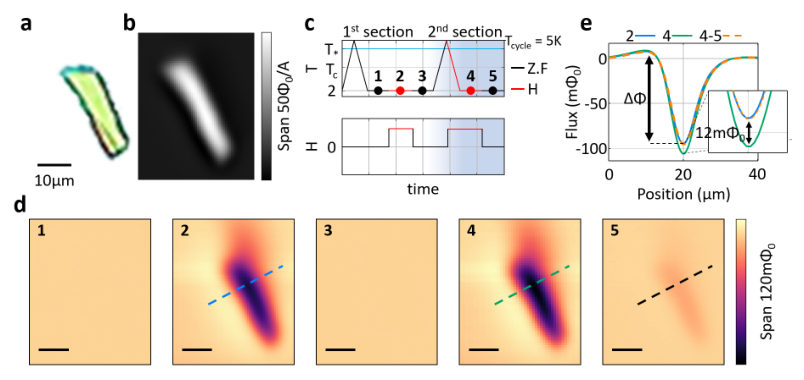
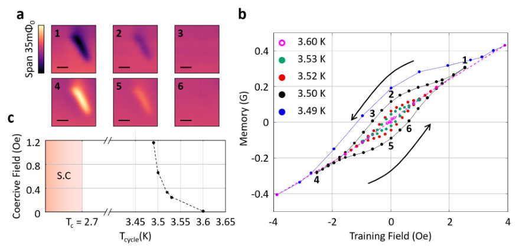
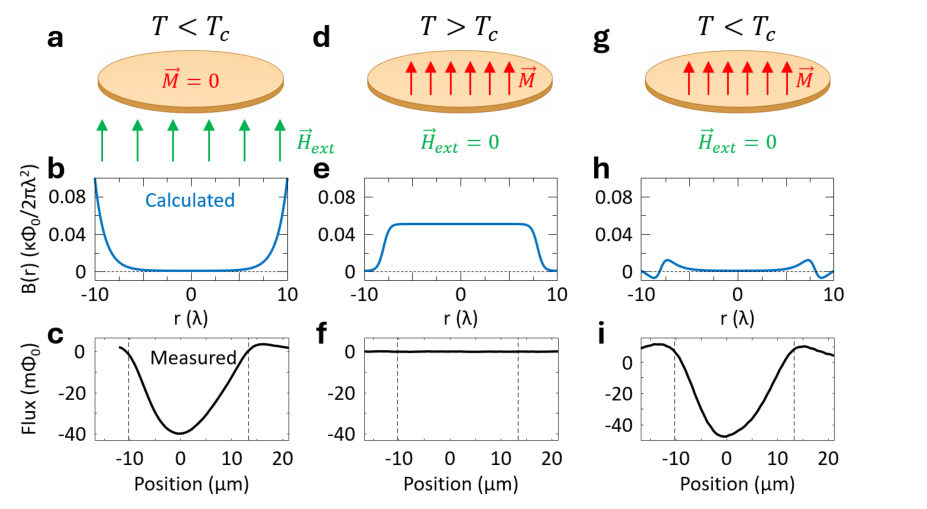

Authors: Suchita Kulkarni
Type: theory · Category: numerical methods · PDF: https://arxiv.org/pdf/2610.39993v1
Analysis basis: full PDF text, analyzed in chunks
Topic relevance: Keldysh / 2PI / non-Gaussian methods 2/5 · methods for driven-dissipative 2/5 · analog quantum simulation 1/5
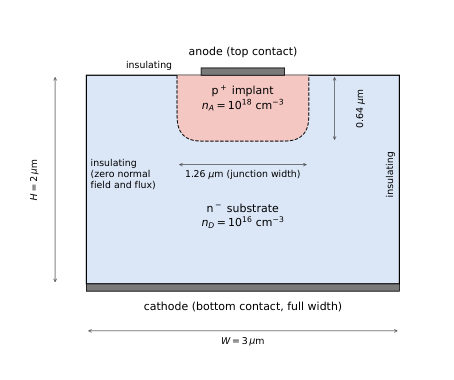
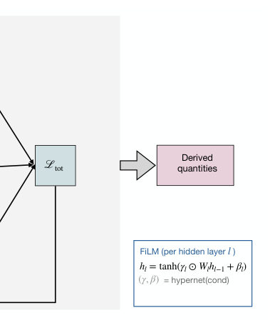
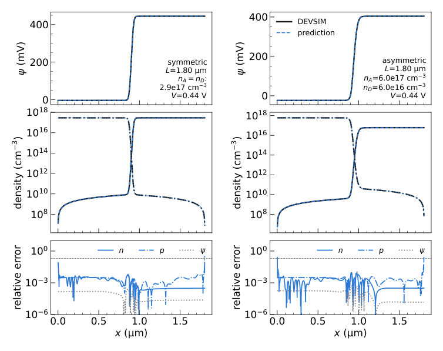
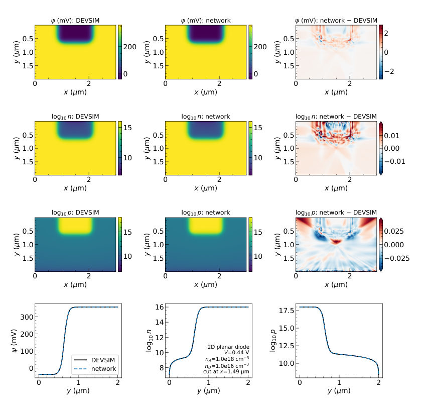
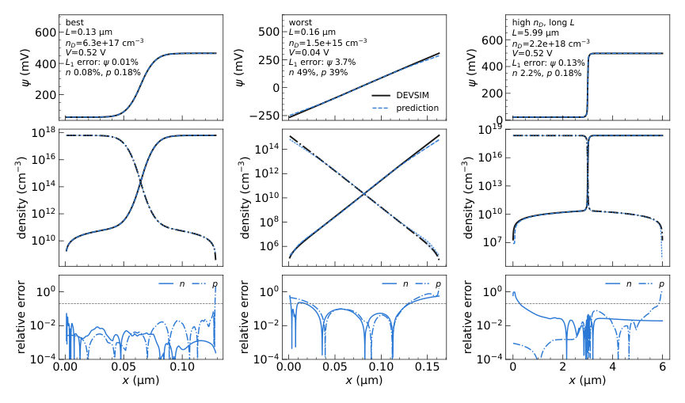
Summary. This work develops a physics-informed, uncertainty-aware surrogate model using PINNs to rapidly simulate the complex electrical behavior of $p$-$n$ junction diodes. By embedding the underlying semiconductor physics into the neural network loss function, the model accurately predicts key quantities like current and electric fields. This significantly accelerates device simulation while providing rigorous estimates of prediction uncertainty.
Why it may be interesting. While focused on semiconductor devices, the core methodology—using PINNs to embed complex, coupled partial differential equations into a machine learning framework—is a powerful general technique for modeling physical systems that could be adapted to quantum many-body or open quantum system dynamics.
Main problem. The goal is to create a fast, reliable, and uncertainty-aware surrogate model to replace computationally expensive Technology Computer-Aided Design (TCAD) simulations for $p$-$n$ junction diodes.
Main result. The developed physics-informed surrogate model achieves high accuracy for key observables like terminal current and depletion width, significantly outperforming data-only approaches.
Method. The authors employ Physics-Informed Neural Networks (PINNs) trained on the coupled electrostatic and carrier-transport equations governing the diode.
Model / system. The system modeled is a semiconductor $p$-$n$ junction diode, governed by drift-diffusion equations and Poisson's equation, formulated using the quasi-Fermi-level parametrization.
Key observables. Terminal current ($J$), depletion width ($W$), peak electric field ($E_{peak}$), and stored charges ($Q_n, Q_p$).
Important parameters / regimes. Device length, doping profile, and applied bias voltage.
Assumptions / limitations. The model relies on the PINN framework to enforce physical laws, and the uncertainty analysis is crucial for determining the validity of predictions.
Figures summary. Figures compare error distributions and performance metrics for readout current ($\hat{J}_{RO}$) versus differentiated current ($\hat{J}_{grad}$) across varying device lengths and doping levels.
Paper structure. The paper details the formulation using PINNs, derives various quantities of interest (QoIs) from the network output, compares the readout current method against direct differentiation, and rigorously quantifies the error and uncertainty bounds.
We develop an uncertainty-aware physics-informed surrogate for a one-dimensional $p$-$n$ junction diode, conditioned on device length, doping and bias. Using the internal state of the device as predicted by the surrogate we develop a test-suite of quantities of interest including the terminal current, depletion width, peak field and stored charge. The formalism and the quantities are can be extended to asymmetric junction and two-dimensional diodes as shown by means of benchmark analysis. For the one-dimensional symmetric junction surrogate, we obtain 0.11% median $L_1$ error on the electrostatic potential, and 1.5% and 0.61% on the electron and hole densities. Finally, we develop an uncertainty analysis which determines the validity of surrogate answer within the user-specified tolerance.
Authors: Hiroto Ogura, Yuto Tsukidate, Shun Kondo, Zhuoqun Li, Natsuki Sasaki, Tsunenobu Sato, Azusa Utsumi, Tomohiro Otsuka, Mitsuhiro Saito, Kazutoshi Inoue, Takashi Taniguchi, Kenji Watanabe, Yuichi Ikuhara, Toshiaki Kato
Type: both · Category: other · PDF: https://arxiv.org/pdf/2610.39694v1
Analysis basis: full PDF text, analyzed in chunks
Topic relevance: analog quantum simulation 2/5 · Keldysh / 2PI / non-Gaussian methods 1/5 · quantum measurements 1/5
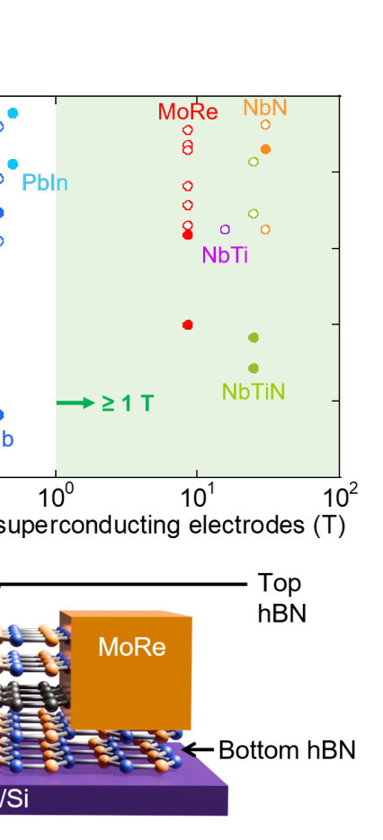
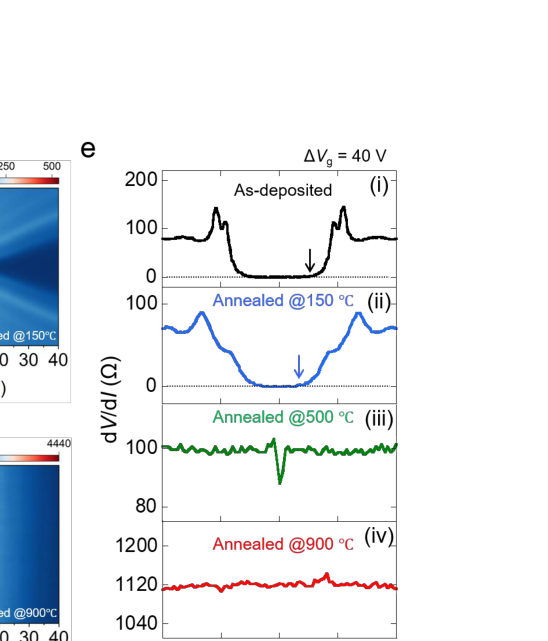
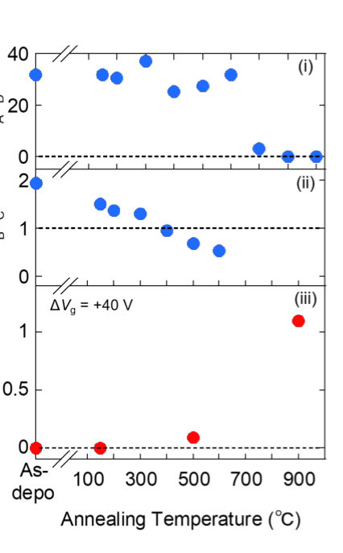
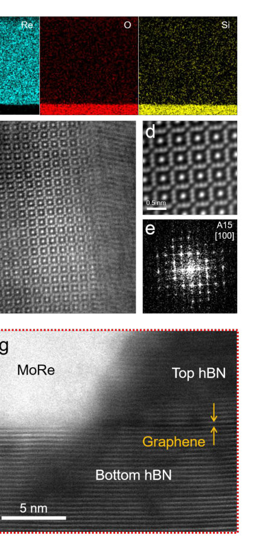
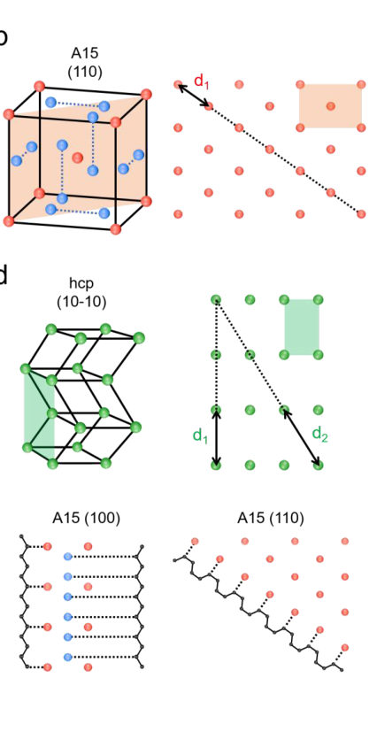
Summary. This work investigates the superconducting interface between graphene and MoRe, finding that the exceptional performance relies on the metastable A15 crystal phase of MoRe. By combining transport, structural, and computational methods, the authors prove that the A15 phase provides both the necessary structural lattice match and the electronic coupling required for robust quantum devices.
Why it may be interesting. While focused on condensed matter superconductivity, the detailed study of interface engineering, structural phase stability, and electronic coupling mechanisms between 2D materials and superconductors is highly relevant to open quantum systems research.
Main problem. The study aims to resolve the microscopic origin of the anomalous, high transparency observed in superconducting contacts formed between graphene and Molybdenum-Rhenium (MoRe) alloys, particularly in high magnetic fields.
Main result. The optimal superconducting contact is achieved when the MoRe forms the metastable A15 superconducting phase in its as-deposited state, which exhibits near-perfect lattice matching with graphene edges and favorable electronic coupling.
Method. The research combines low-temperature transport measurements, X-ray diffraction (XRD) to track phase transitions, atomic-resolution electron microscopy (STEM), and first-principles Density Functional Theory (DFT) calculations.
Model / system. The physical system is a Josephson junction (GJJ) formed by coupling graphene to MoRe electrodes. The key structural comparison is between the superconducting A15 phase and the insulating/degrading hexagonal close-packed (hcp) phase of MoRe.
Key observables. Zero-resistance state, critical current density, crystal phase identification (A15 vs. hcp), lattice mismatch ($ ext{mismatch} < 1\%$), and electronic orbital hybridization near the Dirac cone K point.
Important parameters / regimes. Annealing temperature (critical transition observed between $150^\circ ext{C}$ and $900^\circ ext{C}$), magnetic field strength, and lattice mismatch percentage.
Assumptions / limitations. The high transparency is fundamentally linked to the structural commensurability and electronic coupling provided by the A15 phase.
Figures summary. Figures detail the degradation of zero-resistance states with annealing temperature (XRD/Transport), structural phase transitions ($ ext{A15} o ext{hcp}$), and DFT calculations confirming lattice matching and orbital hybridization.
Paper structure. The paper follows a structure of problem identification (anomalous transparency) $ o$ experimental characterization (transport/XRD/STEM showing phase dependence on annealing) $ o$ theoretical explanation (DFT confirming A15 structure's geometric and electronic suitability) $ o$ conclusion establishing A15 as the universal platform.
Realizing highly transparent and magnetic-field-resilient superconducting contacts is a critical bottleneck for the advancement of two-dimensional (2D) quantum devices. Molybdenum-rhenium (MoRe) alloys have been empirically favored as they uniquely yield ballistic, highly transparent contacts to graphene that survive in high-magnetic-field regimes; however, the microscopic origin of this anomalous transparency has remained a long-standing puzzle. Here, we resolve this paradox by revealing that pristine graphene/MoRe interfaces are governed by the classical A15 superconducting phase. Combining low-temperature transport, X-ray diffraction, and atomic-resolution electron microscopy, we demonstrate that as-deposited MoRe spontaneously forms the A15 phase in direct contact with graphene, whereas thermal annealing triggers a phase transition to a hexagonal close-packed (hcp) structure that severely degrades the Josephson transparency. Crucially, the one-dimensional (1D) transition-metal atomic chains unique to the A15 structure exhibit a near-perfect lattice match (mismatch < 1%) with graphene edges. First-principles calculations further prove that the d-orbitals of these historically renowned 1D chains possibly hybridize with graphene's Dirac cone near the K point. These findings not only uncover the structural and electronic origins of optimal MoRe contacts but also establish A15-phase superconductors as a geometrically ideal, universal platform for realizing robust quantum electronics based on 2D materials.
Authors: Yuanyuan Zhao
Type: theory · Category: other · PDF: https://arxiv.org/pdf/2610.39192v1
Analysis basis: full PDF text, analyzed in chunks
Topic relevance: Keldysh / 2PI / non-Gaussian methods 2/5 · methods for driven-dissipative 2/5
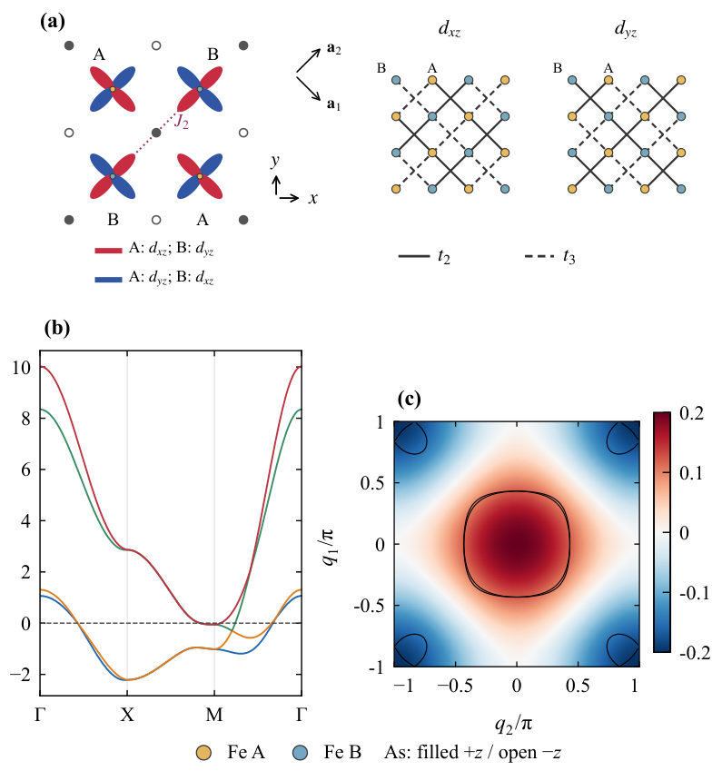
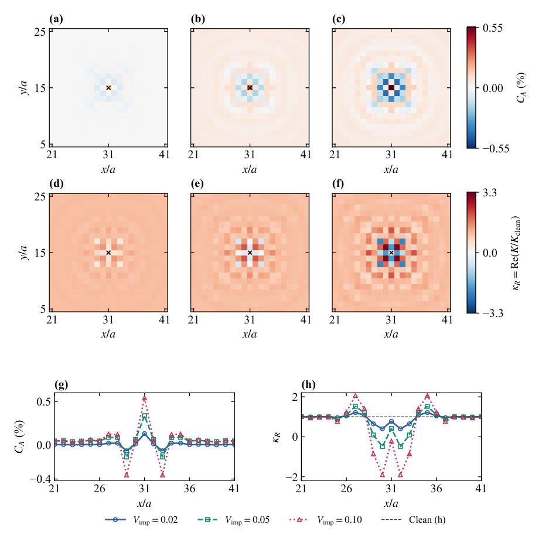
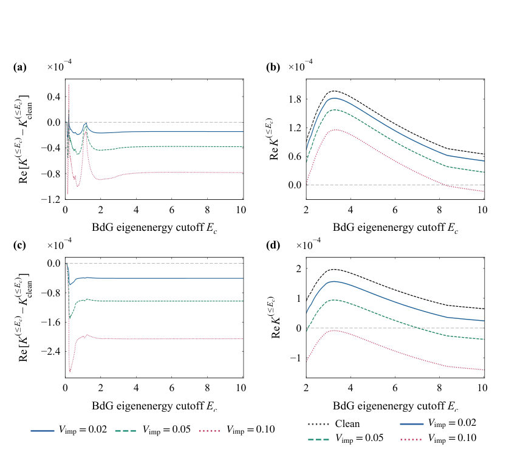
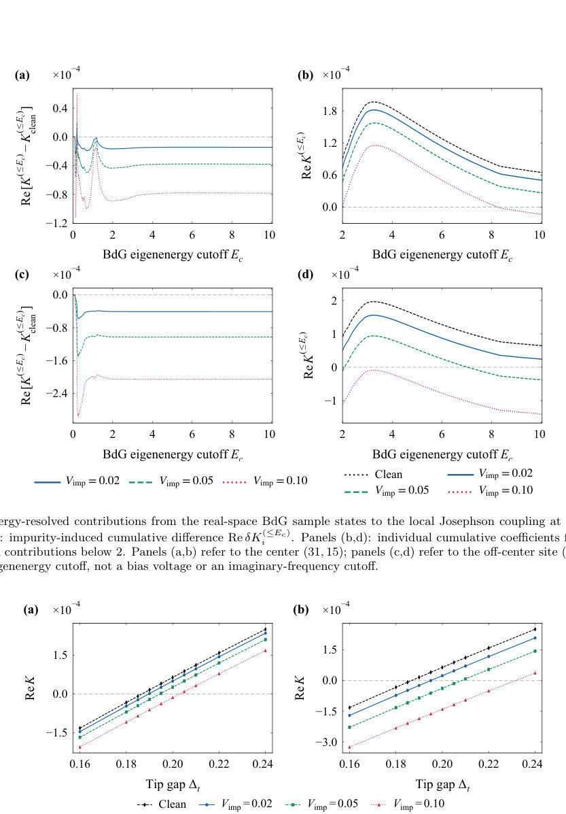
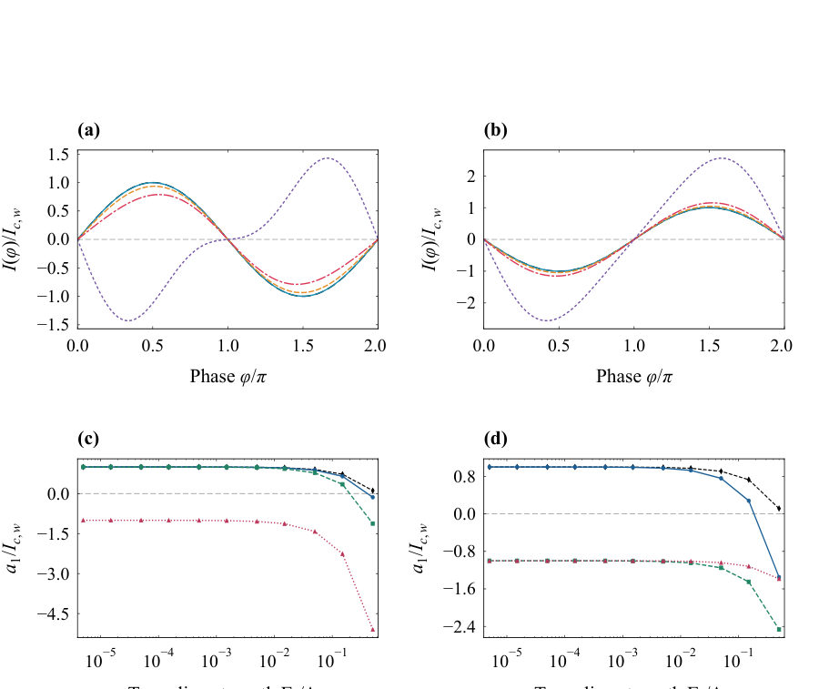
Summary. This theoretical work examines how local Josephson coupling behaves in a two-orbital $s_{\pm}$ superconductor near impurities and vortices. The authors find that impurities can significantly alter the local coupling sign by redistributing spectral weight, and the Josephson phase exhibits complex spatial variations around vortex cores. This work provides detailed signatures for probing superconducting symmetry using scanning tunneling microscopy techniques.
Why it may be interesting. The detailed mapping of local superconducting order parameters and their response to disorder (impurities) and topological defects (vortices) provides insights into the robustness and symmetry of unconventional superconductivity, which is relevant to understanding exotic quantum states.
Main problem. The study investigates the local Josephson response in a two-orbital $s_{\pm}$ superconductor when subjected to nonmagnetic impurities or when near superconducting vortices.
Main result. Nonmagnetic impurities can redistribute anomalous spectral contributions to reverse the local Josephson coupling sign without requiring a $\pi$ phase shift in the bond pair fields. Furthermore, the Josephson response develops a spatially varying phase in the presence of multiple vortices.
Method. The analysis employs theoretical calculations using the Bogoliubov-de Gennes (BdG) Hamiltonian, calculating the local Josephson coefficient ($K_i$) via integrals over the imaginary frequency axis.
Model / system. The system is a two-orbital $s_{\pm}$ superconductor, modeled using two Fe sublattices with $d_{xz}$ and $d_{yz}$ orbitals, motivated by iron arsenide compounds. The calculations are performed self-consistently on a lattice structure.
Key observables. Local Josephson response (sign and phase), local bond pair field magnitude ($|\psi_i|$), and the local anomalous Green function ($F_{i\alpha}(z)$).
Important parameters / regimes. Impurity potential strength ($V_{ ext{imp}}$), tip gap ($\Delta_t$), and the superconducting gap structure ($s_{\pm}$ pairing).
Assumptions / limitations. The tip is modeled as an ideal $s$-wave reservoir, and Zeeman and spin–orbit couplings are omitted from the primary analysis.
Figures summary. Figures illustrate the model structure, the spatial profiles of the bond magnitude ($A_i$), pair field magnitude ($|\psi_i|$), and Josephson coupling magnitude ($|K_i|$) near impurities and vortices, showing distinct spatial variations.
Paper structure. The paper first establishes the model and the measurement technique (JSTM). It then analyzes the effect of impurities on the local Josephson coupling, followed by a detailed examination of the spatial phase variation of the response in a two-vortex state.
We study the local Josephson response near nonmagnetic impurities and vortices in a self-consistent two-orbital $s_{\pm}$ superconductor. For a local $s$-wave tip that couples equally to the two orbitals, anomalous spectral contributions of opposite sign nearly cancel in the clean sample. Nonmagnetic impurities redistribute these contributions and can reverse the local coupling without a corresponding $π$ phase shift of the bond pair fields. Negative coupling appears at off-center sites at weaker impurity potentials than at the impurity site. The impurity-induced change is concentrated at lower quasiparticle energies, while states over a broader energy range contribute to the total clean and impurity couplings. In zero field, the coupling also changes sign as the tip gap is varied, and increasing the tunneling strength can reverse the $m=1$ sine component of the current without changing the sample state. At the chosen coherence-peak energy, increasing impurity strength mainly changes the relative intensities of existing quasiparticle-interference features. In a self-consistent two-vortex state, the Josephson response develops a spatially varying phase relative to the condensate. The response and condensate share the winding close to each core, while larger loops enclose additional winding of the Josephson response. The local Josephson sign and phase reflect the anomalous spectrum and the tip--sample coupling.
Authors: Junhao, Wang
Type: theory · Category: other · PDF: https://arxiv.org/pdf/2610.40251v1
Analysis basis: full PDF text, analyzed in chunks
Topic relevance: analog quantum simulation 2/5 · Keldysh / 2PI / non-Gaussian methods 1/5
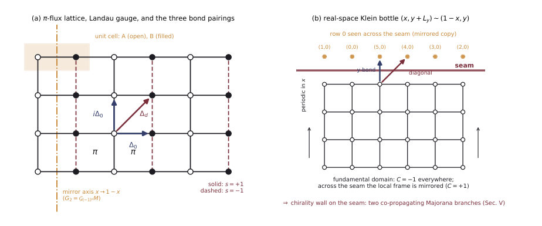
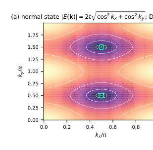
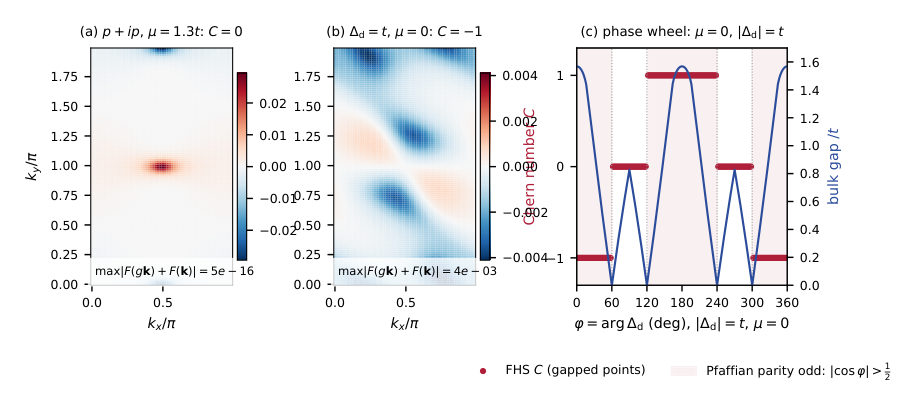
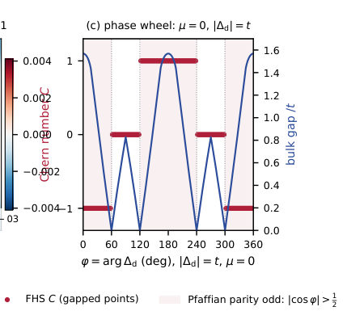
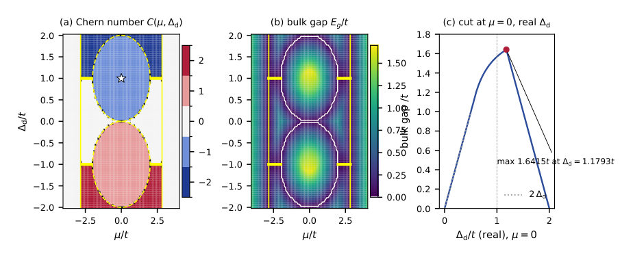
Summary. This paper theoretically examines chiral superconductivity on a Klein bottle lattice, a non-orientable surface. It shows that specific pairing mechanisms induce a topological feature called a chirality wall, which hosts gapless Majorana edge modes. The methodology relies heavily on topological invariants like the Chern number and Pfaffians to characterize the superconducting state.
Why it may be interesting. The work provides a detailed, model-specific theoretical framework for realizing and characterizing topological superconductivity on non-trivial, non-orientable surfaces, which is highly relevant for understanding exotic superconducting states in engineered quantum materials.
Main problem. The study investigates the realization and spectral properties of chiral superconductivity on a closed Klein bottle geometry, focusing on the resulting 'chirality wall' and its associated Majorana seam spectrum.
Main result. The pairing and gluing mechanism on the closed Klein bottle generates a $\Delta C=2$ chirality wall, which hosts two co-propagating chiral Majorana branches that are resolved upon unfolding.
Method. The analysis combines topological field theory concepts (Chern numbers, Pfaffians) with condensed matter techniques applied to lattice Hamiltonians defined on non-orientable manifolds.
Model / system. The model is a spinless $\pi$-flux lattice superconductor analyzed via the Bogoliubov--de Gennes (BdG) Hamiltonian. The geometry is the Klein bottle, which arises from the momentum-space fundamental domain due to the $\pi$ flux.
Key observables. BdG Chern number ($C$), Majorana seam spectrum, gap closing points, and the chirality wall index ($\Delta C$).
Important parameters / regimes. The pairing structure ($\Delta_d$), chemical potential ($\mu$), and the lattice flux ($\pi$-flux).
Assumptions / limitations. The contribution is model-specific, and the authors explicitly state that they are not claiming a protected zero mode or a self-consistent wall solution.
Figures summary. Figures illustrate the model setup on the Klein bottle, the normal state spectrum on the Brillouin Klein bottle, and the resulting Majorana branches on the seam.
Paper structure. The paper proceeds by establishing the constraints on the Chern number imposed by lattice symmetries (glide lift and antiunitary symmetry), deriving necessary conditions for chirality ($C eq 0$), and finally analyzing the spectral consequences of gluing the system onto the closed Klein bottle.
We study a spinless $π$-flux lattice superconductor whose normal-state momentum-space fundamental domain is a Klein bottle. Within this model, a glide lift and a hidden antiunitary symmetry independently force the Bogoliubov--de Gennes (BdG) Chern number to vanish. A diagonal pairing breaks the antiunitary obstruction exactly when its real part is nonzero; this is necessary, not sufficient, for a chiral phase. We derive explicit Pfaffians determining Chern parity and identify three analytic families of gap closings in a real-pairing section. For a chiral state on a closed real-space Klein bottle, the prescribed pairing and gluing produce a $ΔC=2$ chirality wall. A translation-invariant unfolding resolves two co-propagating Majorana branches. Their finite-size levels depend on circumference and holonomy; the near-zero pair is lifted at first order by allowed local seam perturbations. A cut-cylinder control has the same low-energy channel count, so gluing reconnects existing gapless content. We also distinguish literal gluing from deck projection: particle--hole symmetry exchanges the deck eigenblocks, precluding their interpretation as independent BdG quotient Hamiltonians. The contribution is a model-specific account of pairing compatibility and closed-surface seam spectra. The energy cost is evaluated for a fixed pairing background; neither a protected zero mode nor a self-consistent wall solution is claimed.
Authors: Archisman Panigrahi, Vladislav Poliakov, Leonid Levitov
Type: both · Category: strongly correlated electrons · PDF: https://arxiv.org/pdf/2610.40648v1
Analysis basis: full PDF text, analyzed in chunks
Topic relevance: quantum measurements 2/5 · Keldysh / 2PI / non-Gaussian methods 1/5
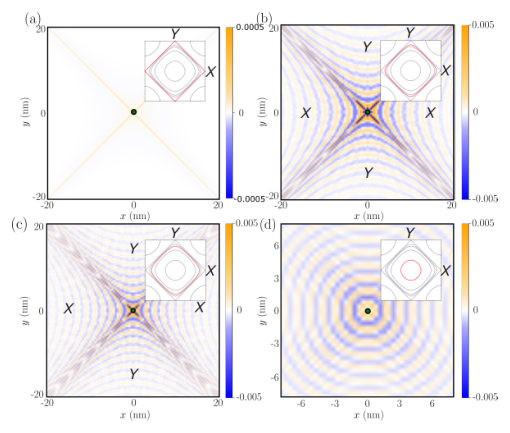
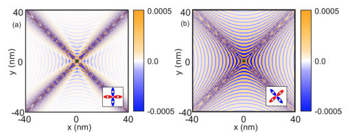
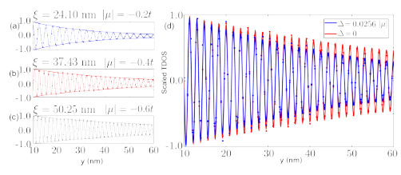
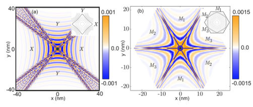
Summary. This work introduces a novel Scanning Tunneling Microscopy (STM) protocol to test for superconducting pairing specifically localized at Van Hove singularities. By analyzing the unique 'light-cone' pattern of Friedel oscillations, researchers can distinguish between pairing occurring at vH points versus elsewhere on the Fermi surface. This method provides a powerful, real-space diagnostic for understanding unconventional superconductivity mechanisms.
Why it may be interesting. The technique provides a momentum-selective, real-space probe of the superconducting gap structure, offering a powerful diagnostic tool complementary to ARPES for studying unconventional superconductivity mechanisms.
Main problem. The primary goal is to experimentally determine if superconducting pairing occurs specifically near Van Hove (vH) singularities, which are known to enhance superconductivity.
Main result. The authors propose using a unique STM protocol that detects 'light-cone' Friedel oscillations, which are suppressed in the superconducting state if pairing is present near the vH points.
Method. The method involves comparing the spatial decay and pattern of Friedel oscillations measured in the normal state versus the superconducting state using Scanning Tunneling Microscopy (STM).
Model / system. The study focuses on 2D electronic systems exhibiting vH singularities, modeled using saddle-point dispersions and analyzed via the Bogoliubov-de Gennes (BdG) Hamiltonian.
Key observables. Light-cone Friedel oscillations (hyperbolic fringes), the decay length ($\xi$) of these oscillations, and the suppression pattern of the fringes in the superconducting state.
Important parameters / regimes. Superconducting gap magnitude ($\Delta$), doping/detuning ($\mu$), and the characteristic length scales ($\xi(T)$ vs $\xi(\Delta, T)$).
Assumptions / limitations. The protocol assumes that quasiparticles from different vH points propagate into distinct, non-overlapping real-space sectors, and that the hyperbolic geometry is robust across different lattice symmetries.
Figures summary. Figures illustrate the transition from hyperbolic light-cone patterns (at small doping) to concentric circles (at large detuning), and show how different gap symmetries suppress oscillations along specific real-space directions.
Paper structure. The paper develops the theoretical framework using the BdG Hamiltonian, derives the light-cone nature of the oscillations from the saddle-point dispersion, and then outlines the step-by-step STM measurement protocol for gap detection.
Van Hove (vH) singularities can enhance superconductivity by generating a large pairing susceptibility. Yet, it remains challenging to experimentally establish whether pairing really occurs near these points. We show that the saddle-point dispersion near a vH point gives rise to a `light-cone' vH-selective behavior of Friedel oscillations, which is drastically different from the familiar concentric circles. Each vH point maps onto its own real-space light-cone sector, allowing STM around a single impurity to measure whether---and how strongly---that saddle-point quasiparticle sector is gapped. A superconducting gap near vH points suppresses the oscillations in the directions corresponding to peaks in the gap function angular dependence, a behavior that provides a signature of vH-related pairing at STM-accessible length scales. This STM protocol, targeting vH superconductivity, is capable of determining whether superconducting pairing emerges near the vH points or elsewhere on the Fermi surface.
Authors: Lecheng Fang, Haotian Li, Haijiao Ji, Quanxin Hu, Hong Ding, Noah F. Q. Yuan
Type: theory · Category: other · PDF: https://arxiv.org/pdf/2610.39942v1
Analysis basis: full PDF text, analyzed in chunks
Topic relevance: analog quantum simulation 2/5 · Keldysh / 2PI / non-Gaussian methods 1/5
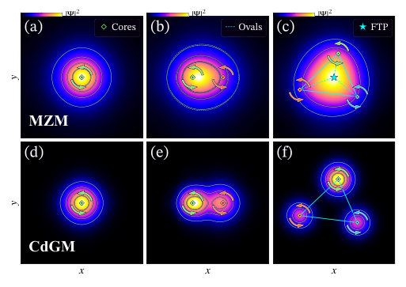
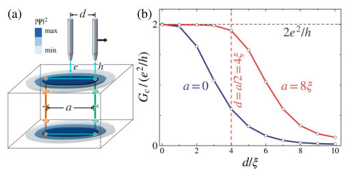
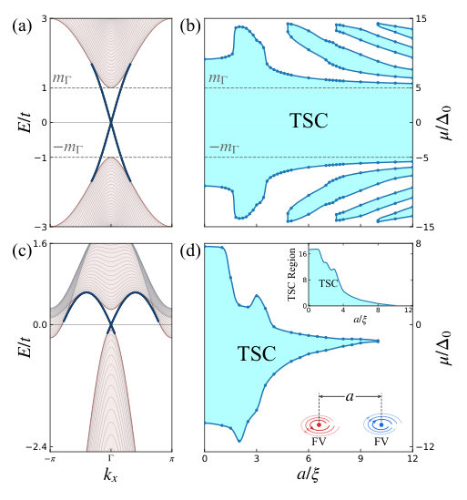
Summary. This theoretical work investigates Majorana Zero Modes hosted by fractional vortices in topological superconductors. The authors show that these MZMs exhibit a unique, spatially unfolded density profile, which can be experimentally detected via enhanced zero-bias conductance peaks in nonlocal crossed Andreev reflection. This provides a robust diagnostic tool to confirm the topological nature of the superconducting state.
Why it may be interesting. The detailed mathematical derivation of the zero-mode wavefunction and the prediction of distinct nonlocal transport signatures (CAR) provide concrete, measurable predictions for experimental detection in superconducting heterostructures.
Main problem. The primary goal is to distinguish Majorana Zero Modes (MZMs) hosted by Fractional Vortices (FVs) from trivial bound states (like CdGM states) in topological superconductors.
Main result. MZMs in FVs are predicted to be spatially unfolded over the vortex cores, leading to unique nonlocal signatures in Crossed Andreev Reflection (CAR) that differ from localized CdGM states.
Method. The analysis involves solving the Bogoliubov-de Gennes (BdG) Hamiltonian for surface states, utilizing index theorems, and deriving exact zero-mode solutions based on minimizing weighted distance functions.
Model / system. The system is a topological superconductor (TSC) modeled by a 3D Hamiltonian featuring Topological Surface States (TSSs) and fractional vortices carrying fractional flux quanta. The analysis uses the BdG operator and considers multiple orbital contributions to the pairing potential.
Key observables. Zero-bias conductance peaks (ZBCP) in nonlocal CAR, the spatial density distribution of the zero mode ($\Psi^\dagger_0\Psi_0$), and the spin texture of the zero mode.
Important parameters / regimes. Chemical potential ($\mu$), vortex core separation ($a$), and the superconducting coherence length ($\xi$).
Assumptions / limitations. The analysis often assumes the pairing potential is a sum of phase-aligned, unit-winding orbital contributions, and specific limits (like the weighted-distance function) are used for exact solutions.
Figures summary. Figures compare the probability density of MZMs (unfolded) versus CdGM states (localized) via tunneling spectroscopy, and illustrate the setup and expected ZBCP in nonlocal CAR.
Paper structure. The paper progresses from establishing the physical platform (FVs in TSCs) to deriving the governing Hamiltonian and zero-mode equations. It then develops diagnostic tools (LDOS, CAR) to distinguish topological MZMs from trivial states, culminating in detailed mathematical solutions for the spatial profile of the zero modes.
Majorana zero modes (MZMs) are promising for topological quantum computation, with vortices in topological superconductors serving as a leading platform. Recent experiments show that integer Abrikosov vortices in iron-based superconductors can split into fractional vortices (FVs) carrying fractional flux quanta. We show that due to topological protection, MZMs hosted by FVs are spatially unfolded over the FV cores, while fermionic bound states remain localized at individual FV cores. This yields zero-bias conductance peaks in both local tunneling and nonlocal crossed Andreev reflection, offering an alternative MZM signature.
Authors: Kin Hung Fung, K. T. Law, C. T. Chan
Type: theory · Category: disordered systems and neural networks · PDF: https://arxiv.org/pdf/2610.40066v1
Analysis basis: full PDF text, analyzed in chunks
Topic relevance: analog quantum simulation 2/5 · Frenkel-Kontorova 1/5
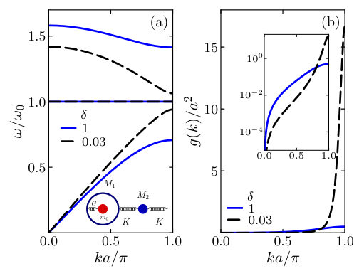
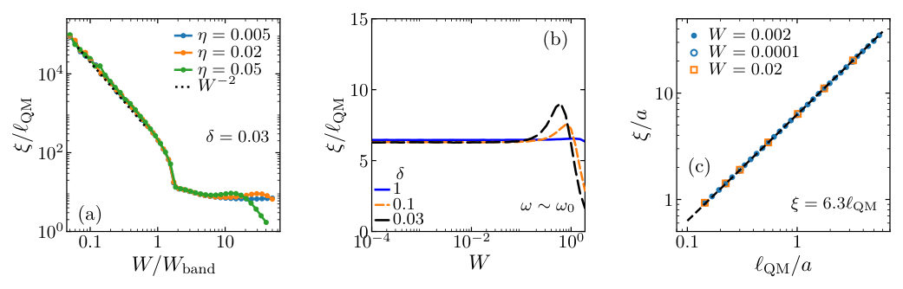
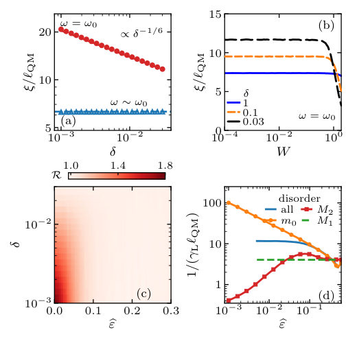
Summary. This paper analyzes how disorder affects the localization length in flat-band systems modeled by a mass-spring chain. It shows that while the localization length usually scales predictably with the quantum metric, specific types of disorder at the exact flat-band frequency cause deviations. These exceptions reveal that disorder can select localization scales beyond what the quantum metric alone predicts.
Why it may be interesting. The work provides a detailed theoretical understanding of how geometric invariants (like the quantum metric) govern transport properties in engineered systems, while also pinpointing the precise conditions (selective disorder) where these predictions break down, which is crucial for designing robust quantum devices.
Main problem. The study investigates the quantum metric scaling of localization length in classical flat bands and identifies specific exceptions to this scaling law.
Main result. While the localization length generally follows the quantum metric length near the flat band, selective mass disorder at the exact flat-band frequency causes deviations, suggesting the quantum metric sets a minimum localization scale.
Method. The analysis uses the Bloch equation for a locally resonant mass-spring chain, incorporating mass disorder, and compares the calculated localization length ($\xi$) against the quantum metric length ($\ell_{QM}$).
Model / system. The system is a locally resonant mass–spring chain modeled by a Hamiltonian leading to the Bloch equation $D(k)U = \omega^2MU$. Disorder is introduced via random mass loading ($m_{\alpha,n} = m_{\alpha}(1 + W b_{\alpha,n})$).
Key observables. Localization length ($\xi$), Quantum Metric Length ($\ell_{QM}$), and the ratio $\xi/\ell_{QM}$.
Important parameters / regimes. Gap-opening parameter ($\delta$), Disorder Strength ($W$), and Detuning ($\eta$ or $b_\epsilon$).
Assumptions / limitations. The analysis assumes the model of the locally resonant mass–spring chain and treats the mass disorder as independent random loading.
Figures summary. Figures illustrate quantum metric localization near the flat band under disorder, showing crossovers between conventional scaling and the plateau set by $\ell_{QM}$. Comparisons are made between $\xi/\ell_{QM}$ at the exact flat-band frequency versus detuned frequencies.
Paper structure. The paper establishes the quantum metric concept, analyzes the localization length ($\xi$) in the presence of disorder, details the general quantum metric scaling, and then focuses on the specific, anomalous scaling laws observed at the exact flat-band frequency due to selective disorder coupling.
The quantum metric length has been proposed as the localization length scale in one-dimensional flat bands. Here, we study this quantum metric scaling and the exceptions to it in a classical flat band formed by a locally resonant mass--spring system. We find that the localization length follows the quantum metric length near the flat band but departs from this proportionality at the exact flat-band frequency. Selective mass disorder also produces divergent localization lengths or arbitrarily short tails near the flat-band frequency without changing the clean metric. These exceptions show that disorder can select localization scales beyond those predicted by the quantum metric alone.
Authors: Z. J. Smith, O. Wen, S. Q. Dang, E. Panner, J. Anczarski, T. Aralis, T. Dyson, S. W. Henderson, H. Magoon, A. Simchony, C. Stone-Whitehead, N. Tabassum, B. A. Young, M. Munaf, D. J. Temples, C. Cap, C. L. Chang, Y. -Y. Chang, M. Garcia-Sciveres, W. Ho, K. Li, X. Li, R. Linehan, M. Lisovenko, K. Okubo, Manabputra, K. Ramanathan, S. Ray, B. Sandoval, A. Suzuki, G. Wang, M. Williams, J. R. Xiong, V. Yefremenko, B. L. T. Plourde, S. R. Golwala, K. Stifter, N. A. Kurinsky
Type: both · Category: statistical mechanics · PDF: https://arxiv.org/pdf/2610.39338v1
Analysis basis: full PDF text, analyzed in chunks
Topic relevance: Keldysh / 2PI / non-Gaussian methods 1/5 · correlated / nonlocal dissipation 1/5 · driven-dissipative phase transition 1/5 · methods for driven-dissipative 1/5 · non-equilibrium universality 1/5 · quantum measurements 1/5
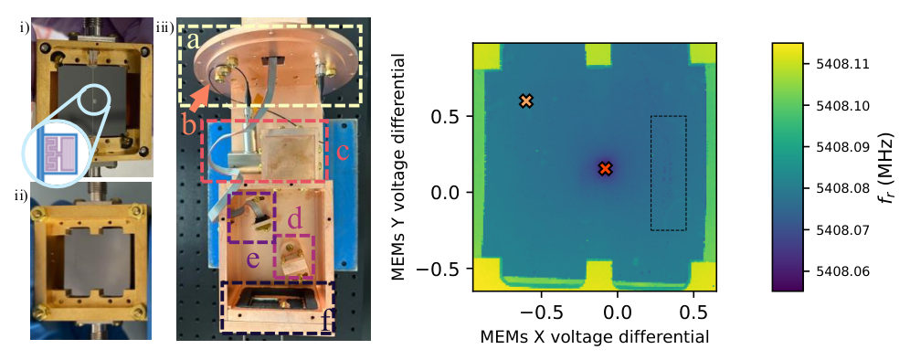
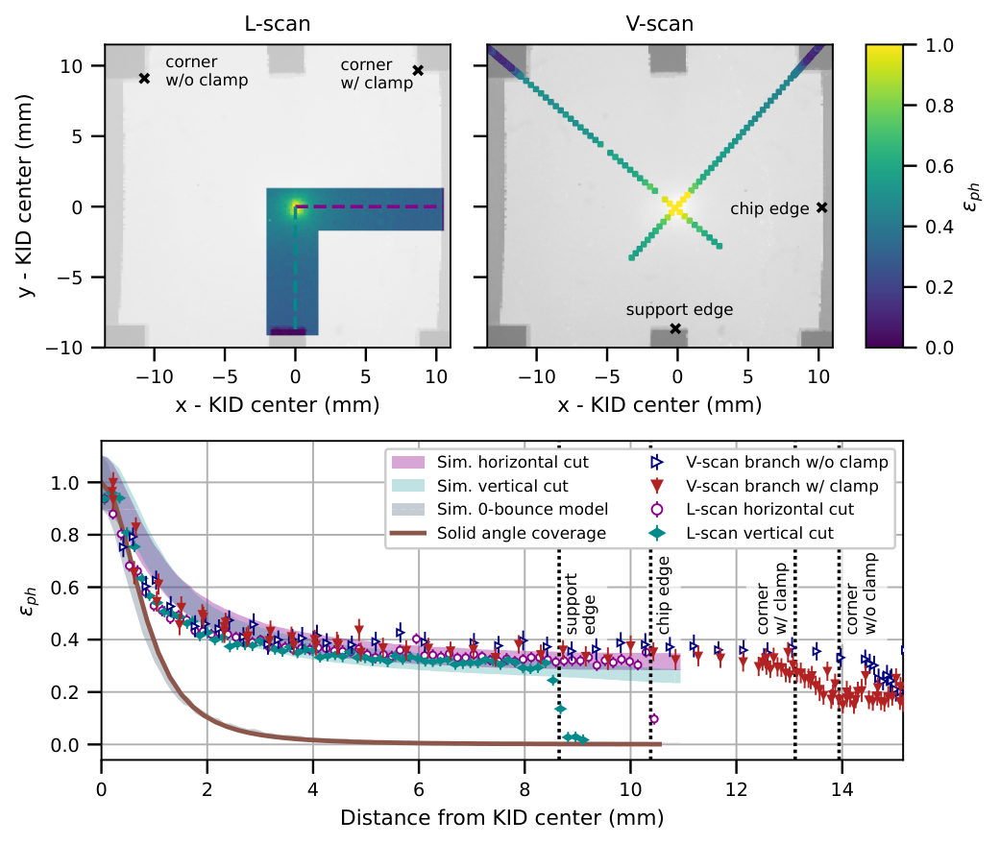
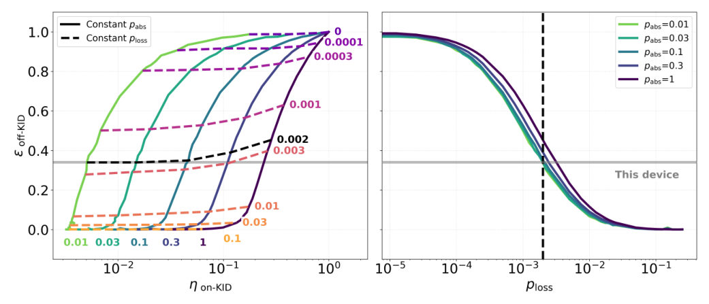
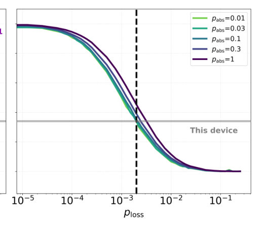
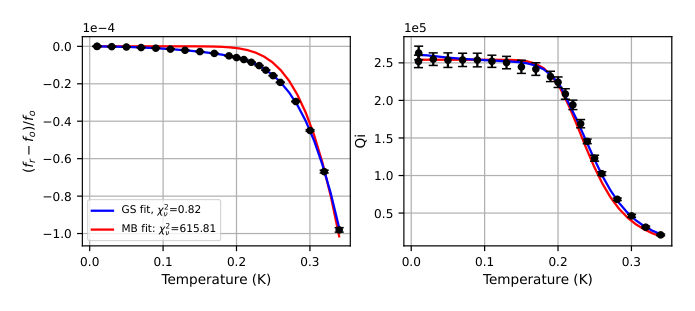
Summary. This work characterizes a phonon-mediated detector by measuring its response across varying positions and temperatures. The authors establish that the detector's phonon collection efficiency is remarkably stable and isotropic, suggesting bulk energy loss rather than localized defects. By modeling the thermal response using heat capacity components, they provide a comprehensive understanding of the underlying energy dissipation mechanisms.
Why it may be interesting. The detailed analysis of thermal response using heat capacity models and the investigation of energy loss mechanisms provide insights into non-equilibrium thermal dynamics in superconducting circuits, relevant to quantum energy harvesting.
Main problem. The study investigates the position- and temperature-dependent responsivity of a Kinetic Inductance Phonon-Mediated (KIPM) detector.
Main result. The phonon collection efficiency was found to be largely isotropic and independent of temperature, suggesting energy loss within the crystal rather than discrete absorption sinks.
Method. The authors combine MEMS-based optical scanning for position dependence with temperature tuning and fitting the detector response to multi-component heat capacity models.
Model / system. The system is a KID-based detector coupled to a niobium coplanar waveguide, where phonon transport and energy loss are modeled using G4CMP simulations and analyzed via thermal response fitting.
Key observables. Phonon collection efficiency ($\epsilon_{ph}$), detector response $S_{21}(t; f_r)$, and temperature-dependent heat capacity components ($C_{pb}, C_{Sch}, C_{abs}$).
Important parameters / regimes. Temperature range (down to cryogenic levels), optical spot size (100 $\mu$m), and characteristic energy scales like $E_{TLS}/h = 1.2 ext{ GHz}$.
Assumptions / limitations. The isotropic angular dependence is attributed to isotropic energy loss in the crystal, and the temperature dependence of phonon dynamics is assumed to be negligible.
Figures summary. Figures show the MEMS setup for optical scanning, pulse response measurements (L-scan/V-scan), and detailed fits of the total thermal response ($\Delta T$) to a sum of pair-breaking, Schottky, and absolute capacity components.
Paper structure. The paper progresses from characterizing position dependence using optical scanning, to modeling phonon collection efficiency, and finally to analyzing the temperature dependence by fitting the response to a multi-component heat capacity model.
We report on the position- and temperature-dependent response of a kinetic inductance phonon-mediated (KIPM) detector. To study position-dependence, we used a controllable mirror attached to a micro-electromechanical system (MEMS) to steer optical light with a 100 $μ$m spot size over the backside of the cryogenic detector. With both pulsed and continuous operation of the LED, we observe features of the detector housing and find that the signal is strongest when the LED is pointed directly at the KID. The "off-KID" response is measured to be 34% of the "on-KID" response and is largely independent of direction. We model phonon propagation and collection in the KIPM detector with G4CMP and assert that the isotropic angular dependence is unlikely to be due to discrete phonon absorption "sinks", such as the microwave feedline or the device mounting points, but can be explained instead by an isotropic energy loss in the crystal. We furthermore utilize the temperature flexibility of the MEMS and KIPM detector system to investigate temperature-dependent responsivity, both at the sensor level (i.e., frequency shifts in the KID) and at the detector level (i.e., position dependence). We fit the KID's response to a two-component heat capacity and present the model as an alternative way to understand the KID's response to absorbed energy. We show on- and off-KID data at a range of temperatures and show that the phonon dynamics are not temperature dependent. We comment on the resulting implication for KID dynamics and design improvements.
Authors: Zhijie Xue, Yuan Tian, Nanyu Chen, Xiujuan Zhang, Tao Li, Shuang Zhang, Fuxin Guan
Type: both · Category: other · PDF: https://arxiv.org/pdf/2610.40125v1
Analysis basis: full PDF text, analyzed in chunks
Topic relevance: Frenkel-Kontorova 1/5 · analog quantum simulation 1/5 · correlated / nonlocal dissipation 1/5 · driven-dissipative phase transition 1/5 · methods for driven-dissipative 1/5 · non-equilibrium universality 1/5
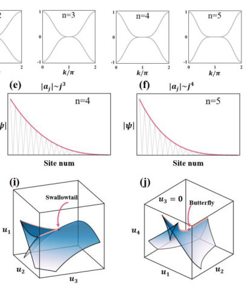
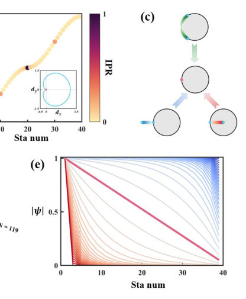
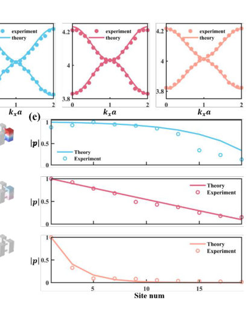
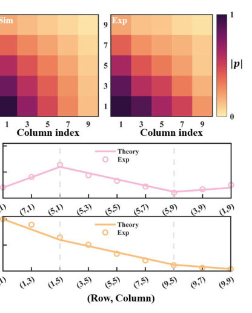
Summary. This research reveals that at specific topological multicritical points, wave localization at boundaries does not decay exponentially but instead follows a universal, scale-free polynomial decay dictated by the underlying singularity structure. By mapping this physics onto Arnold's catastrophe theory, the authors provide a deterministic framework for engineering these anomalous boundary modes, which they experimentally confirm in acoustic metamaterials.
Why it may be interesting. This work provides a powerful, universal mathematical tool (catastrophe theory) to predict and engineer non-standard wave localization behaviors in topological matter, bridging abstract mathematics with concrete physical realization in metamaterials.
Main problem. The paper investigates anomalous wave localization at boundaries, challenging the conventional understanding that wave decay must be exponential.
Main result. They establish that at topological multicriticalities, boundary modes exhibit anomalous polynomial decay, which is mathematically linked to the system's singularity structure via catastrophe theory.
Method. The study combines theoretical analysis using transfer matrices and singularity theory (Arnold's catastrophe) with experimental realization using acoustic metamaterials.
Model / system. The primary model involves acoustic metamaterials, mathematically described using an open boundary condition (OBC) Hamiltonian and a transfer matrix approach, which is generalized to 2D lattices.
Key observables. Anomalous polynomial decay of boundary modes ($\propto (N_A-j)^{n-1}$), topological winding numbers, and the observation of specific band touching types (quadratic vs. linear).
Important parameters / regimes. Topological multicriticalities, the order of the singularity ($n$), and the parameters defining the phase diagram (e.g., $t_0, t_1, t_2$).
Assumptions / limitations. The work assumes that the geometric structure of the bulk-boundary correspondence can be universally mapped onto Arnold's catastrophe theory framework.
Figures summary. Figures illustrate the schematic of the OBC Hamiltonian, canonical unfolding geometries for various catastrophes (fold, cusp, etc.), the topological phase diagram, and spatial profiles confirming linear/polynomial decay in 1D and 2D.
Paper structure. The paper progresses by first establishing the mathematical link between defective transfer matrices and polynomial decay, then mapping this to catastrophe theory, and finally demonstrating this universal scaling law both numerically and experimentally in acoustic metamaterials.
Spatial wave localization at boundaries is conventionally restricted to exponential decay. Here, we observe a scale-free boundary mode exhibiting anomalous polynomial decay, highlighted by strictly linear spatial envelopes, driven by topological multicriticality in acoustic metamaterials. We establish a universal geometric bulk-boundary correspondence rooted in singularity theory by mapping n-th order topological multicriticality onto Arnold An catastrophe. We prove that defectiveness in the spatial transfer matrix enforces a (n-1)-th power spatial decay of boundary modes. At a topological tri-critical point, the singularity of winding function manifests as an A2 fold catastrophe. This dictates a strictly linear spatial decay, marking a sharp departure from the conventional exponential scaling paradigm. Using acoustic metamaterial platforms tuned to a tricritical point, we experimentally demonstrate this linear decay envelope in 1D, and further generalize it to two-dimensional systems to realize scale-free corner modes with simultaneous linear decay along orthogonal directions. While existing critical topology frameworks rely on entanglement spectra to diagnose mode existence in gapless regimes, our work bridges catastrophe theory with topological matter at multicriticalities, advancing the field from abstract mode identification to deterministic real-space wavefunction engineering.
Authors: Akhilesh Kumar, Shivani Soni, Gomathi Natarajan, Ramanathaswamy Pandian, Thameemul Ansari M, Pooja Gupta, Sanjay Rai, Edward Prabu Amaladass
Type: both · Category: other · PDF: https://arxiv.org/pdf/2610.39523v1
Analysis basis: full PDF text, analyzed in chunks
Topic relevance: correlated / nonlocal dissipation 1/5 · driven-dissipative phase transition 1/5 · non-equilibrium universality 1/5 · quantum measurements 1/5 · scars & prethermalization 1/5
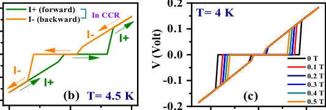
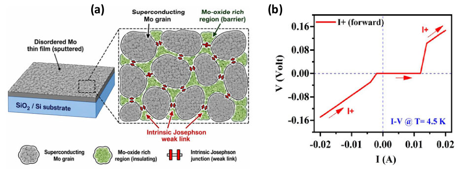
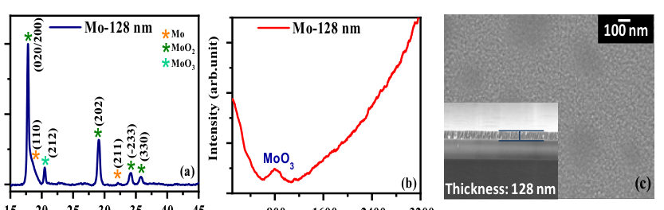
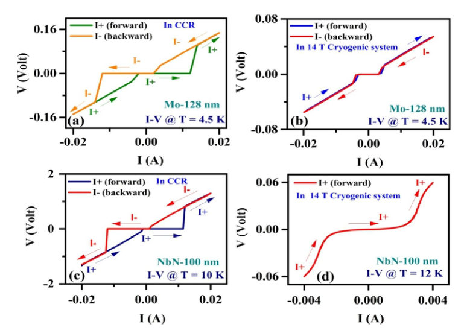
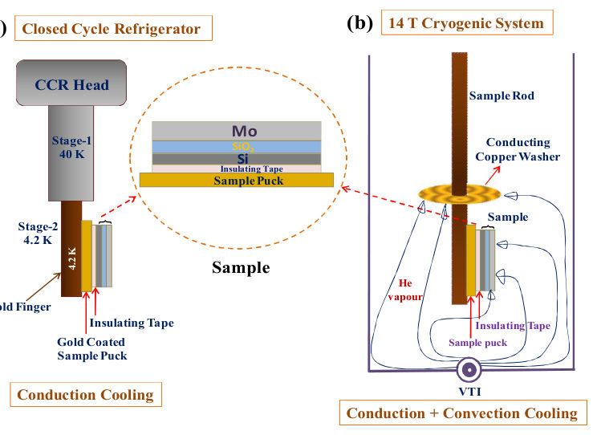
Summary. This work examines superconducting diode effects in Mo thin films, initially observing strong current-direction asymmetry. By comparing results from different thermal environments and using thermal simulations, the authors conclude that the apparent diode behavior is largely an artifact of electrothermal feedback from Joule heating. This highlights the critical need to decouple thermal switching from true intrinsic non-reciprocal superconductivity.
Why it may be interesting. The rigorous separation of intrinsic quantum effects from classical thermal/dissipative effects is crucial for interpreting measurements in superconducting quantum devices, linking macroscopic transport to microscopic physics.
Main problem. The paper investigates the origin of superconducting diode effects (direction-dependent critical currents) in thin films, aiming to distinguish intrinsic non-reciprocal superconductivity from measurement artifacts.
Main result. The observed current-direction asymmetry is primarily attributed to electrothermal effects arising from Joule heating and finite thermal relaxation, rather than an intrinsic superconducting non-reciprocity.
Method. The study combines electrical transport measurements (I-V curves) in different cryogenic environments with thermal modeling (Energy 2D simulations) to analyze heat dissipation pathways.
Model / system. The physical systems studied are superconducting thin films, specifically Mo and NbN, deposited on Si/SiO2 substrates, which exhibit superconducting transitions around 5.8 K.
Key observables. Current-direction asymmetry ($\Delta I_c$), critical current density ($J_c$), and the dependence of transport characteristics on the measurement environment (e.g., thermalization level).
Important parameters / regimes. Superconducting transition temperature ($T_C \approx 5.8$ K), current density ($I$), and the thermal relaxation time/boundary conditions.
Assumptions / limitations. The primary assumption tested is that the observed asymmetry can be modeled by thermal feedback ($P=I^2R$) rather than solely by microscopic symmetry breaking mechanisms.
Figures summary. Figures illustrate the temperature dependence of resistance and I-V curves showing asymmetry in a closed-cycle refrigerator (CCR) versus a 14T system. Simulations compare heat transfer under different cooling conditions, showing the impact of convection.
Paper structure. The paper progresses by presenting initial observations of asymmetry in Mo films, contrasting these results between two different cryogenic setups, attributing the discrepancy to electrothermal effects, and concluding with simulations that model the thermal feedback mechanism.
Superconducting diode effects are characterized by direction-dependent critical currents in the superconducting state. Here, we investigate diode-like transport in 128-nm-thick Mo thin film deposited on Si_SiO2 substrate by DC magnetron sputtering. The thin film exhibit a superconducting transition temperature TC of 5.8 K. Pronounced current-direction asymmetry and hysteresis are observed in current-voltage characteristics measured in a closed-cycle refrigerator. In contrast, the same thin film exhibits a substantially more symmetric response in a 14T cryogenic system with improved sample thermalization. We attribute this strong dependence on the measurement environment to electrothermal effects arising from current-induced Joule heating and finite thermal relaxation. As the current approaches the superconducting-to-resistive switching condition, the emergence of a resistive component leads to a rapid increase in Joule heating, raising the sample temperature and modifying the switching condition. Conversely, during the resistive-to-superconducting transition, residual heating and finite thermal relaxation reduce the switching current. Since P is equal to I2R it is independent of current polarity, the observed asymmetry is not associated with polarity-dependent Joule heating but with the interplay of thermal relaxation, sweep history, and thermal boundary conditions. The suppression of the asymmetry under improved thermalization, together with similar behavior observed in NbN reference films, indicates that the apparent diode-like response is strongly influenced by electrothermal effects. These results highlight the need to distinguish thermal switching and hysteresis from intrinsic nonreciprocal superconductivity when identifying superconducting diode effects in transport measurements.
Authors: Shalev Gur, T. R. Devidas, Eylon Persky, Roni Anna Gofman, Irena Feldman, Avior Almoalem, Sudip Kumar Saha, Mark H. Fischer, Avraham Klein, Jonathan Ruhman, Amit Kanigel, Beena Kalisky
Type: both · Category: strongly correlated electrons · PDF: https://arxiv.org/pdf/2610.39979v1
Analysis basis: full PDF text, analyzed in chunks
Topic relevance: Keldysh / 2PI / non-Gaussian methods 1/5 · analog quantum simulation 1/5 · quantum measurements 1/5



Summary. This work analyzes magnetic memory in superconducting 4Hb-TaS2 flakes, showing the memory persists even when vortices are absent. By comparing experimental flux profiles to theoretical models, the authors argue that the memory is not due to trapped flux or simple magnetism, but rather points toward a hidden electronic phase coupling to the superconducting condensate via an effective gauge field.
Why it may be interesting. The concept of an 'effective gauge field' coupling to the superconducting condensate is highly relevant to understanding exotic pairing mechanisms and emergent gauge symmetries in strongly correlated superconductors.
Main problem. The paper investigates the origin of magnetic memory effects observed in unconventional superconductors, specifically determining if this memory arises from trapped magnetic flux, weak conventional magnetism, or a novel hidden electronic order.
Main result. The observed magnetic memory persists in the vortex-free Meissner regime and exhibits a spatial profile consistent with an effective, non-magnetic flux imprinted on the superconducting condensate, suggesting a hidden electronic phase.
Method. The study combines advanced experimental magnetometry (SQUID measurements on exfoliated flakes) with theoretical modeling based on the Ginzburg-Landau free energy functional.
Model / system. The system is superconducting flakes of 4Hb-TaS2, modeled using the Ginzburg-Landau theory which incorporates superconducting order parameters and magnetic coupling terms. The analysis distinguishes between screening currents from external fields and currents generated by internal magnetization.
Key observables. Magnetic memory signal ($\Delta\Phi_{ ext{rem}}$), spatial flux profiles, and the ratio $\Delta\Phi_{ ext{rem}}/\Delta\Phi_{ ext{ZFC}}$ (found to be $\approx 0.11 - 0.12$).
Important parameters / regimes. Superconducting transition temperature ($T_c$), penetration depth ($\lambda$), coherence length ($\xi$), and the ratio $\kappa = \lambda/\xi$.
Assumptions / limitations. The analysis rules out explanations based on trapped vortices or ordinary weak magnetism, focusing on the memory's proportionality to the screening response.
Figures summary. Figures illustrate the ZFC/FC protocols showing remanent flux maps, and supplementary figures validate the spatial uniformity and waiting-time independence of this memory signal.
Paper structure. The paper progresses from initial experimental observations of memory in the Meissner regime, ruling out vortex-trapping mechanisms, to detailed theoretical modeling using GL theory to distinguish between internal magnetization sources and effective gauge field coupling.
Understanding the normal state of unconventional superconductors is central to uncovering the origin of superconductivity itself. Unconventional superconductivity often emerges from correlated electronic states characterized by intertwined symmetry-breaking orders. A striking example is 4Hb-TaS2, whose superconducting state exhibits a remarkable range of phenomena, including an unusual magnetic memory effect. Previous experiments showed that magnetic memory can be encoded above Tc and later revealed through spontaneous vortices below Tc, suggesting time-reversal symmetry breaking. However, since memory and vorticity are intertwined, this prevents establishing whether the effect results from trapped flux, weak conventional magnetism, or a true hidden electronic order. Here, we show that magnetic memory persists in the vortex-free Meissner regime of exfoliated 4Hb-TaS2 flakes, where it appears as a stable remanent modification of the superconducting screening response. Our results rule out explanations based on trapped vortices. Furthermore, the spatial profile of the flux generated by trained samples at zero field is inconsistent with conventional weak magnetism, suggesting a hidden electronic phase that imprints an effective flux on the superconducting condensate.
Authors: Chenhao Liang, Haohao Sheng, Sheng Zhang, Zhong Fang, Hongming Weng, Zhijun Wang
Type: theory · Category: other · PDF: https://arxiv.org/pdf/2610.39604v1
Analysis basis: full PDF text, analyzed in chunks
Topic relevance: Keldysh / 2PI / non-Gaussian methods 1/5 · analog quantum simulation 1/5 · quantum measurements 1/5
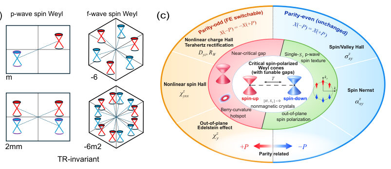
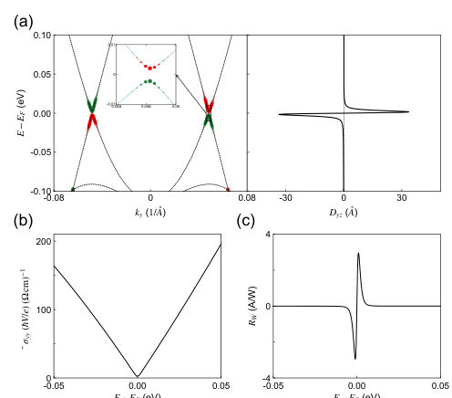
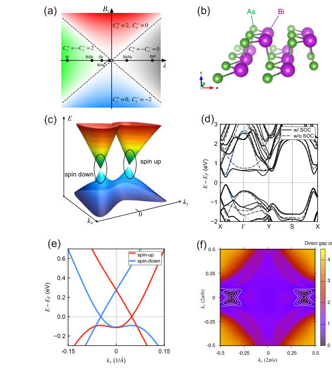
Summary. This work develops a general theory for critical spin-Weyl fermions in 2D nonmagnetic ferroelectrics, identifying the $\alpha$-Bi-like family as a promising material class. Through theoretical calculations, the authors predict giant spin splitting and novel spin transport effects, which can be actively controlled by reversing the material's ferroelectric polarization.
Why it may be interesting. While focused on condensed matter, the concept of symmetry-protected topological states and the ability to electrically switch fundamental electronic properties (like spin texture) is highly relevant to engineered quantum materials and controlling quantum states.
Main problem. The paper aims to establish a general theoretical framework for critical spin-polarized Weyl fermions in 2D nonmagnetic systems and identify a viable material platform exhibiting unconventional spin transport.
Main result. The $\alpha$-Bi-like Group-V ferroelectric family, specifically BiAs, was shown to host critical spin-Weyl points, giant spin splitting, and electrically switchable nonlinear/spin transport phenomena.
Method. The study uses first-principles calculations combined with the construction of an effective k.p Hamiltonian derived from symmetry analysis to model the electronic structure and transport properties.
Model / system. The system is modeled using a four-band k.p Hamiltonian for 2D nonmagnetic ferroelectrics. The focus is on the $\alpha$-Bi-like puckered-layer family, with BiAs serving as the primary example.
Key observables. Spin splitting magnitude, spin Chern numbers ($C_s$), Berry curvature dipole ($D_{yz}$), out-of-plane Edelstein response, and Spin Nernst conductivity ($ ext{SNC}$).
Important parameters / regimes. Electric field/Ferroelectric polarization (for switching), strain, and magnetic field strength.
Assumptions / limitations. The low-energy physics is described by an effective k.p Hamiltonian, and the analysis relies on symmetry constraints to protect certain spin components.
Figures summary. Figures illustrate the odd-wave spin textures, topological phase diagrams showing the evolution of spin Chern numbers, and calculations demonstrating how ferroelectric reversal switches the sign of the Berry curvature dipole and spin texture.
Paper structure. The paper first derives the general symmetry conditions for critical spin-Weyl fermions. It then applies this framework to the $\alpha$-Bi-like family, calculating band structures, topological invariants, and various transport coefficients (like BCD and $ ext{SNC}$) to demonstrate the predicted phenomena.
Large and electrically controllable spin splitting in nonmagnetic materials is highly desirable for condensed-matter physics and spintronics, enabling strongly spin-polarized quasiparticles and unconventional spin transport as well as their electrical control. Here, we establish a general framework for critical spin-polarized Weyl fermions in two-dimensional (2D) nonmagnetic systems. We predict the $α$-Bi-like Group-V puckered-layer family of 2D ferroelectrics as a material platform combining critical spin-Weyl fermions, giant spin splitting, and electrically switchable nonlinear and spin transport. Our calculations reveal exchange-scale spin splitting induced by spin-orbit coupling and a $p$-wave spin texture in the BiAs monolayer. Moreover, BiAs hosts four critical spin-Weyl points, each formed within a single-spin channel. The nearly quantized $\langle S_z\rangle$ is protected by an emergent $S_z$-conservation symmetry in the low-energy limit. The spin-Weyl cones also give rise to unconventional spin-transport phenomena, including a purely out-of-plane Edelstein response and a pronounced spin Nernst effect. Ferroelectric reversal further enables electrical switching of the $p$-wave spin texture and inversion-odd responses, while the tunability of these properties through composition, strain, and magnetic field is also systematically demonstrated across the entire family. These results establish both a general nonmagnetic framework and a promising material platform for exploring critical spin-Weyl physics, nonlinear Hall phenomena, and unconventional spin transport.
Authors: Magnus Husted, Viktor Kanstrup, Eduardo J. C. Dias, Joel D. Cox
Type: theory · Category: strongly correlated electrons · PDF: https://arxiv.org/pdf/2610.39737v1
Analysis basis: full PDF text, analyzed in chunks
Topic relevance: Keldysh / 2PI / non-Gaussian methods 1/5 · analog quantum simulation 1/5
Summary. This theoretical work models the optical properties of twisted bilayer graphene nanoislands, showing that the moiré superlattice fundamentally controls the electronic response. Key findings include the formation of resonance ladders and the emergence of a moiré-enabled chiral plasmon, demonstrating that twist angle acts as a powerful tuning knob for these quantum optical phenomena.
Why it may be interesting. The explicit calculation of chiral plasmons and the use of the Born-Kuhn pseudoscalar to quantify handedness provides a rich theoretical framework applicable to understanding topological and symmetry-protected excitations in low-dimensional quantum materials.
Main problem. The study investigates how the moiré superlattice formed by twisting two stacked graphene layers modifies the collective optical response of finite, nanoscale bilayers.
Main result. The moiré lattice dictates the emergence of an ordered resonance ladder and enables a moiré-enabled Born-Kuhn chiral plasmon, confirming twist as a mechanical handle for graphene plasmons.
Method. The authors employed an atomistic tight-binding and self-consistent density-matrix approach to compute the twist-dependent plasmonic response.
Model / system. The physical system is twisted bilayer graphene (TBG) nanoislands (hexagonal and triangular geometries). The model incorporates edge effects and the moiré superlattice periodicity, analyzing the optical response ($\sigma_{ext}$) as a function of twist angle ($ heta$) and doping ($\eta$).
Key observables. Extinction cross section ($\sigma_{ext}$), Born-Kuhn pseudoscalar ($C(\omega)$), and the emergence of resonance ladders.
Important parameters / regimes. Twist angle ($ heta$), moiré wavelength ($\lambda_m$), doping level ($\eta$), and the critical angle ($ heta_m$).
Assumptions / limitations. The analysis uses the quasistatic approximation and operates in the linear-response regime for optical calculations.
Figures summary. Figures illustrate the dependence of $\sigma_{ext}$ on $ heta$ for both undoped and doped cases, showing the resonance ladder and the anticrossing associated with the chiral plasmon near $ heta_m$.
Paper structure. The paper systematically analyzes the optical response by first establishing the role of the moiré lattice in creating resonance ladders, then focusing on the doped regime to derive the chiral plasmon signature via interlayer coupling, and finally confirming these effects using different island geometries.
Twisting two stacked graphene layers superimposes a moiré superlattice that reshapes their electronic structure, yet how it shapes the collective optical response of finite, nanoscale bilayers remains largely unexplored. Using an atomistic tight-binding and self-consistent density-matrix approach, we compute the twist-dependent plasmonic response of twisted bilayer graphene nanoislands comprising thousands of atoms. The spectra are strongly tunable and split into two regimes at a critical angle where a single moiré wavelength spans the island; beyond it, an ordered ladder of resonances emerges whenever an integer number of moiré periods fits within the overlapping bilayer. In doped islands, the interlayer coupling also produces a moiré-enabled Born--Kuhn chiral plasmon: opposite transverse dipoles in the two layers form an electric quadrupole that hybridizes with the bright dipole, opening an anticrossing near the critical angle, with a handedness that reverses with the twist direction. Triangular islands confirm that the moiré lattice, not the flake boundary, governs both effects, establishing twist as a mechanical handle on chiral graphene plasmons.
Authors: O. Lundgren, A. V. Rodina, Al. L. Efros
Type: theory · Category: other · PDF: https://arxiv.org/pdf/2610.38874v1
Analysis basis: full PDF text, analyzed in chunks
Topic relevance: quantum measurements 1/5

Summary. This paper theoretically investigates how the physical surface of PbS and PbSe nanocrystals alters their electronic energy levels. By moving beyond standard boundary conditions to use General Boundary Conditions derived from current continuity, the authors show that surface effects modify size dependence and induce spin-orbit splitting. This provides a quantitative framework to explain the differences observed between bare and chemically passivated nanocrystals.
Why it may be interesting. The rigorous derivation and application of GBCs to account for surface effects in semiconductor quantum dots is highly relevant to open quantum systems and quantum optics, as surface passivation and interface physics are critical for controlling exciton lifetimes and emission properties.
Main problem. The study focuses on accurately modeling the quantum confinement energy levels in PbS and PbSe nanocrystals, specifically addressing how the physical surface modifies these electronic structures.
Main result. The use of General Boundary Conditions (GBCs) successfully modifies the predicted size dependence of confinement levels and predicts an additional spin-orbit splitting, allowing for quantitative comparison between bare and passivated NCs.
Method. The authors employ a four-band effective-mass model and derive GBCs by enforcing the continuity of the normal component of the current density at the nanocrystal surface.
Model / system. The system is spherical PbS and PbSe nanocrystals modeled using a four-band effective-mass Hamiltonian. The core theoretical advancement is replacing standard boundary conditions with GBCs derived from current continuity.
Key observables. Electron and hole quantum confinement levels, size dependence of optical transitions, and spin-orbit splitting of $1P_{h,e}$ levels.
Important parameters / regimes. The surface-induced parameters derived from GBCs, such as $\gamma_c, \gamma_v$, and the comparison between bare and Cl-passivated states.
Assumptions / limitations. The analysis assumes an abrupt spherical surface modeled as an impenetrable barrier, and the GBCs are derived from current density continuity.
Figures summary. Figure 6 illustrates the global fit of transition energy versus core diameter for PbS NCs, demonstrating the success of the GBC model.
Paper structure. The paper progresses by introducing the four-band model, deriving the necessary General Boundary Conditions (GBCs) from current continuity, analyzing how these GBCs modify the size dependence, and finally applying them to quantitatively describe optical transitions in bare and passivated NCs.
The structure of the electron and hole quantum confinement levels in spherical PbS and PbSe nanocrystals (NCs) is studied within the framework of a four-band effective-mass model. This level structure was initially calculated within the Kang--Wise model, which employs the standard boundary condition of vanishing carrier wave functions at the NC surface. This model, however, does not allow one to account for the effect of the NC surface on the level structure. Here, the effect of the NC surface is modeled using general boundary conditions (GBCs) imposed on the envelope wave functions at the surface. We show that the surface properties modify the size dependence of the electron and hole confinement levels and lead to an additional spin--orbit splitting of the $1P_{h,e}$ levels. Using the GBCs, we are able to quantitatively describe the size dependence of the lowest optical transitions in bare PbS and PbSe NCs and explain the differences between the absorption spectra of bare and Cl-passivated PbS NCs
Authors: Yonah Mann, Tobias Holder
Type: theory · Category: other · PDF: https://arxiv.org/pdf/2610.39428v1
Analysis basis: full PDF text, analyzed in chunks
Topic relevance: analog quantum simulation 1/5

Summary. This theoretical work models graphene islands coupled to a larger graphene matrix, showing that the electronic structure is significantly modified by the proximity effect. By deriving an effective Hamiltonian based on the island's relative area, the authors predict a tunable density of states that does not decay exponentially with system size. This highlights graphene's potential for precise band-structure engineering at the nanoscale.
Why it may be interesting. The finding that the electronic modification does not decay exponentially with size, but rather shows a finite, size-dependent intercept, suggests a robust, non-trivial coupling mechanism that could be relevant for designing quantum devices.
Main problem. The study investigates how the electronic structure of nanoscale graphene islands is modified by their proximity to the surrounding, chemically identical graphene environment.
Main result. The proximity effect is predicted to be unusually strong and persistent, leading to a substantial and tunable alteration of the low-energy density of states dependent on the island's relative area.
Method. The authors employed a tight-binding approximation, deriving an effective single-unit-cell Hamiltonian by renormalizing interlayer hopping parameters based on the island's relative area.
Model / system. The system consists of nanoscale multilayer graphene islands (with varying stacking configurations like ABC, ABA, ABCA) embedded within a larger supercell of graphene contacts. The analysis uses a supercell Hamiltonian approach.
Key observables. Low-energy density of states (DOS), wavefunction weight distribution ($W_{n,I}$), and the standard deviation of the wavefunction weight across unit cells ($ ilde{\sigma}_{u.c.}$).
Important parameters / regimes. Relative island area ($\eta = A_I / A_{sc}$), supercell size ($\ell_{sc}$), and the quantum coherence length ($\ell_Q$).
Assumptions / limitations. The analysis assumes the wavefunction is fully hybridized between the island and contacts, and that the system size remains smaller than the quantum coherence length.
Figures summary. Figures illustrate the device structure, compare band structures (pristine vs. island), and show the dependence of wavefunction weight and standard deviation on the relative area $\eta$ and supercell size $\ell_{sc}$.
Paper structure. The paper progresses by first establishing the supercell model, deriving an effective Hamiltonian parameterized by the relative area $\eta$, and then calculating and analyzing the resulting band structure modifications and wavefunction uniformity across different stacking types.
Multilayer graphenes have emerged as a versatile avenue towards exploring novel electronic phases of matter. Recently, nanoscale multilayer graphene islands have been realized experimentally, where the island is less than 50 nm in diameter and distinct in layer configuration from the contact portion of the same graphene sheets, the latter of which act as leads for transport probes. Here, we theoretically investigate how the proximity between these islands and their chemically identical environment modifies the electronic structure. Within the tight-binding approximation, we find that the proximity effect is enhanced by the closely matched momenta between both parts, creating an unusually strong band renormalization which persists as the island size is increased, and only limited by the coherence length. An effective single-unit-cell Hamiltonian to capture these modifications is derived, expressed in terms of interlayer hopping parameters that scale with the relative island area. We predict a substantially altered low-energy density of states for 3- and 4-layer graphene islands, demonstrating the tunability of the electronic structure by spatial size.
Authors: Benjamin Achatz, Matthias Zeilerbauer, Marco Thaler, Milan Ončák, Shadi Fatayer, Laerte L. Patera
Type: both · Category: other · PDF: https://arxiv.org/pdf/2610.39822v1
Analysis basis: full PDF text, analyzed in chunks
Topic relevance: quantum measurements 1/5
Summary. This paper investigates how the arrangement of molecules in an intermixed self-assembled monolayer (SAM) dictates the electronic properties at the interface. Using $ ext{STS}$ and $ ext{KPFS}$, the authors demonstrate that the stripe phase of $ ext{C}_{60}$ molecules exhibits enhanced charge transfer compared to isolated islands. This work provides guidelines for engineering molecular junctions with tailored electronic characteristics.
Why it may be interesting. The work provides a detailed, quantitative link between nanoscale structural organization (stripe vs. island) and fundamental electronic properties (charge transfer), which is crucial for designing functional molecular electronic interfaces.
Main problem. The study aims to establish a direct link between the molecular assembly structure of intermixed self-assembled monolayers (SAMs) and the resulting interfacial electronic properties, specifically charge transfer.
Main result. The stripe phase of $ ext{C}_{60}$ molecules, constrained by $ ext{Zn-TAPP}$ on $ ext{Ag}(111)$, exhibits enhanced charge transfer compared to close-packed islands, stabilizing the intermixed structure by reducing Coulomb repulsion.
Method. The research combines advanced experimental techniques like Scanning Tunnelling Spectroscopy ($ ext{STS}$) and Kelvin Probe Force Spectroscopy ($ ext{KPFS}$) with theoretical calculations (DFT) to map electronic states and local surface dipoles.
Model / system. The system involves intermixed SAMs of fullerene $ ext{C}_{60}$ and $ ext{Zn-TAPP}$ molecules adsorbed on an $ ext{Ag}(111)$ substrate, forming distinct stripe and island phases.
Key observables. Local Contact Potential Difference ($ ext{LCPD}$), $ ext{C}{60}$ state occupation, interfacial dipole, and $ ext{C}$ intermolecular spacing.
Important parameters / regimes. Interfacial dipole magnitude, charge transfer amount (up to $0.5$ electrons/molecule), and lattice parameters of the porphyrin layer.
Assumptions / limitations. The analysis relies on deconvolution techniques to correct for the spatial averaging inherent in $ ext{KPFS}$ measurements, and DFT calculations use specific functionals and basis sets.
Figures summary. Figures illustrate $ ext{STM}$ images showing ordered phases, $ ext{KPFS}$ spectra comparing different molecular arrangements, and deconvolution results comparing measured vs. intrinsic local potentials.
Paper structure. The paper progresses by first identifying the intermixed phase structure, then using $ ext{KPFS}$ and $ ext{STS}$ to measure local electronic properties, and finally using DFT calculations to model the underlying charge transfer mechanisms in both stripe and island geometries.
Intermixed self-assembled monolayers (SAMs) provide a powerful approach for tuning inorganic-organic interfaces, but their local structure and energetics often remain elusive. Here, an intermixed stripe phase of fullerene $C_{60}$ and Zn(II)-5,10,15,20-tetrakis(4-aminophenyl)porphyrin (Zn-TAPP) on a Ag(111) surface is identified, establishing a direct link between molecular assembly and charge transfer. Scanning tunnelling spectroscopy (STS) and Kelvin probe force spectroscopy (KPFS) have been used to map electronic states and local contact potential differences (LCPD). Compared to close-packed $C_{60}$ islands, the stripe phase exhibits a larger interfacial dipole and increased occupation of previously unoccupied $C_{60}$ states, consistent with enhanced charge transfer from Ag(111) to $C_{60}$. Analysis indicates that larger $C_{60}$ spacing in the stripe geometry reduces Coulomb repulsion, stabilizing the intermixed phase and enhancing charge transfer with respect to close-packed domains. These results provide direct evidence of charged $C_{60}$ molecules in stripe structures and guidelines for engineering intermixed SAMs with tailored interfacial electronic properties.
Authors: Szymon Nosewicz, Marcin Maździarz, Paweł Hołobut, Witold Chromiński, Katarzyna Kowalczyk-Gajewska, Grzegorz Jurczak
Type: both · Category: numerical methods · PDF: https://arxiv.org/pdf/2610.38783v1
Analysis basis: full PDF text, analyzed in chunks

Summary. This work establishes a multiscale computational framework to predict the elastic properties of polycrystalline NiAl. It integrates atomistic simulations (MD) to find single-crystal stiffness, uses EBSD data to build realistic microstructures, and then employs FEM to simulate the bulk response. The successful comparison between numerical predictions and experimental data validates the comprehensive multiscale approach.
Why it may be interesting. While focused on materials science, the core methodology—combining atomistic simulations (MD) with continuum modeling (FEM) across multiple length scales—is a general computational framework relevant to many-body dynamics simulations in condensed matter theory.
Main problem. The paper aims to determine the elastic constants and effective elastic response of polycrystalline NiAl by developing a multiscale framework that integrates atomistic simulations with continuum mechanics.
Main result. The multiscale approach achieved very good agreement between the numerically simulated effective Young's modulus and Poisson's ratio, and the experimentally measured values.
Method. The methodology combines Molecular Dynamics (MD) for single-crystal stiffness tensors, Finite Element Modeling (FEM) using EBSD-generated 3D microstructures, and analytical homogenization techniques.
Model / system. The physical system is intermetallic nickel aluminide (NiAl) in a polycrystalline state. The model incorporates realistic microstructural features, grain orientations, and grain sizes derived from Electron Backscatter Diffraction (EBSD) data.
Key observables. Effective Young’s modulus (E) and Poisson’s ratio (ν); stiffness tensors (C); elastic constants.
Important parameters / regimes. Grain anisotropy and morphology; single-crystal stiffness tensors derived from MD calculations.
Assumptions / limitations. The analysis assumes that the elastic behavior can be accurately modeled by combining atomistically derived properties with continuum approximations, though classical analytical methods are noted to rely on strong assumptions.
Figures summary. The notes mention figures illustrating atomistic models for different lattice vector orientations and an overview of the EBSD-based reconstruction workflow used for the FEM simulations.
Paper structure. The paper follows a multiscale progression: first, determining single-crystal properties via MD; second, reconstructing the complex polycrystal geometry using EBSD data; third, simulating the bulk response using FEM; and finally, comparing these results against analytical bounds and experimental measurements.
The presented work proposes a multiscale framework for the numerical and analytical determination of the elastic constants of the intermetallic nickel aluminide (NiAl) at the microscopic scale. Molecular dynamics (MD) calculations have been employed to evaluate the stiffness tensors of a single NiAl monocrystalline body with cubic Pm$\bar{3}$m symmetry. The atomistic results were transferred to the upper scale as an input to micromechanical models. Here, finite element modeling (FEM) and analytical homogenization methods were used to simulate the elastic behavior of polycrystalline NiAl, with special attention to grain anisotropy and its morphology. The microstructural features of the heterogeneous body were evaluated experimentally using electron backscatter diffraction (EBSD) and subsequently used to generate a 3D polycrystalline geometric model that preserves realistic distributions of grain orientations and grain sizes. The reconstructed NiAl polycrystal was subjected to uniaxial tensile test simulations using FEM to evaluate the effective Young's modulus ($E$) and Poisson's ratio ($ν$). The numerical results were confronted with the experimental values of $E$ and~$ν$. With these model assumptions, a very good agreement between numerical and experimental results was achieved. Finally, the experimental results were compared with classical analytical estimates. Among the analytical approaches, the Hashin-Shtrikman upper bound and self-consistent approximation reproduced the experimental Young's modulus with minor deviations.
Authors: Debasis Das
Type: theory · Category: disordered systems and neural networks · PDF: https://arxiv.org/pdf/2610.39625v1
Analysis basis: full PDF text, analyzed in chunks
Summary. This review explores using emerging non-volatile memory devices (eNVM) to build energy-efficient hardware for neuromorphic computing. It argues that these devices can emulate the synaptic plasticity required for artificial neural networks, moving beyond the limitations of traditional, power-hungry computing paradigms. The paper compares the suitability of ReRAM, PCM, and spintronics for this advanced application.
Why it may be interesting. While focused on classical computation, the underlying physics of resistive switching, magnetic domain wall dynamics, and energy-efficient state transitions in spintronics are highly relevant to understanding non-equilibrium dynamics and energy dissipation in quantum systems.
Main problem. The need for energy-efficient hardware to implement complex artificial neural networks (ANNs) that mimic the brain's function.
Main result. Emerging non-volatile memory (eNVM) devices like ReRAM, PCM, and spintronics are ideal candidates for realizing synaptic behavior in neuromorphic hardware.
Method. The paper reviews the progression from first-generation (step-function) to third-generation (Spiking Neural Networks) computational models, mapping these requirements onto the capabilities of various physical memory devices.
Model / system. The system involves crossbar arrays implementing ANNs, where the synaptic weight modulation is emulated by physical eNVM devices (ReRAM, PCM, spintronics). The biological inspiration is the neuron/synapse unit.
Key observables. Energy efficiency, synaptic plasticity (conductance modulation), and the ability to support event-driven, sparse activity (spikes).
Important parameters / regimes. Switching currents, resistance states (high/low), time constants ($ au$), and the relative energy consumption compared to biological systems.
Assumptions / limitations. The core assumption is that the synaptic plasticity and non-volatility offered by eNVM devices can successfully bridge the gap between biological function and solid-state electronics.
Figures summary. Figures illustrate the evolution of neural transfer functions (step, Sigmoid, Tanh, ReLU) and schematic views of neuromorphic chip architectures incorporating neuro-synaptic cores.
Paper structure. The structure moves from the general problem of energy-inefficient deep NNs to the necessity of SNNs, then details how specific eNVM technologies (PCM, RRAM, Spintronics) can physically implement the required synaptic plasticity and non-volatile storage.
This chapter explores the critical role of emerging non-volatile memory (eNVM) devices in advancing neuromorphic computing. Inspired by the human brain's remarkable ability to perform complex tasks like pattern recognition and adaptation, neuromorphic computing offers immense potential for implementing complex neural networks (NNs) in real hardware. Despite ongoing research into the brain's complexities, its fundamental operation relies on neurons (processing units communicating via electrochemical signals) and synapses (junctions between neurons). The modifiable strength of the synapse is key to learning and memory functionality, allowing the brain to adapt and rewire itself. For dense and low-power circuits in neuromorphic computing, these eNVM devices are ideal due to their synaptic-like behavior and non-volatile information storage. Properties such as conductance modulation of these devices emulate synaptic plasticity, which is crucial for learning, and their scalability makes them promising for large-scale neuromorphic architectures. This chapter will delve into the various types of eNVM devices such as resistive RAM (ReRAM), phase-change memory (PCM), spintronics-based memory devices, and their applications in neuromorphic computing, discussing their challenges and opportunities, and highlighting recent advances in their integration within neuromorphic systems.
Authors: Ishita Jana, Sourav Sarkar, Soham Saha, Kalyan Mandal
Type: experiment · Category: other · PDF: https://arxiv.org/pdf/2610.39696v1
Analysis basis: full PDF text, analyzed in chunks
Summary. This work reports the successful synthesis of $ ext{GaFeO}_3$ thin films using Pulsed Laser Deposition, establishing them as promising room-temperature multiferroics. Key characterization confirmed the coexistence of ferroelectric and ferrimagnetic orders, alongside a measurable strong magnetodielectric coupling. These findings position $ ext{GaFeO}_3$ as a viable platform for advanced spintronic and memory devices.
Why it may be interesting. While the core physics is condensed matter solid-state physics, the strong coupling between electric and magnetic orders ($ ext{magnetoelectric}$ effect) is a key area of interest in quantum materials research, linking classical ferroics to quantum phenomena.
Main problem. The research aims to develop room-temperature single-phase multiferroics exhibiting coupled ferroelectric and magnetic order for next-generation spintronic and magnetoelectric memory devices.
Main result. The study successfully demonstrated that $ ext{GaFeO}_3$ thin films exhibit robust ferroelectricity, ferrimagnetism, and strong magnetodielectric coupling ($\sim 2.3\%$) at room temperature.
Method. The films were grown using Pulsed Laser Deposition (PLD) and characterized using a suite of techniques including X-ray Photoelectron Spectroscopy (XPS), Piezoresponse Force Microscopy (PFM), and dielectric/magnetic measurements.
Model / system. The physical system is polycrystalline orthorhombic $ ext{GaFeO}_3$ thin films grown on FTO substrates. The focus is on the interplay between ferroelectric, magnetic, and dielectric properties within this single-phase material.
Key observables. Reversible local polarization switching (PFM), high relative dielectric constant ($\sim 1700$), strong magnetodielectric coefficient ($\sim 2.3\%$), and specific chemical ratios ($ ext{Fe}^{3+}/ ext{Fe}^{2+} \approx 1.65$).
Important parameters / regimes. Room temperature operation, low magnetic field ($0.1 ext{ kOe}$), and controlled stoichiometry (low oxygen vacancies).
Assumptions / limitations. The primary assumption is that the controlled growth conditions (PLD) lead to a stable, single-phase multiferroic material suitable for device applications.
Figures summary. Figures show XRD confirming orthorhombic symmetry, FESEM/SEM confirming film thickness ($\sim 100.6 ext{ nm}$), PFM images demonstrating polarization switching, and spectra used to analyze chemical states (XPS).
Paper structure. The paper follows a standard materials science structure: introduction of the problem (multiferroics), detailed characterization of the synthesized film ($ ext{PLD}$ growth, $ ext{XPS}$ for stoichiometry, $ ext{PFM}$ for ferroelectricity), and finally, demonstration of the key coupled property (magnetodielectric effect).
Room-temperature single-phase multiferroics exhibiting coupled ferroelectric and magnetic order are promising candidates for next-generation magnetoelectric memory and spintronic technologies. Here, we report the growth of approximately 100.6 nm thick polycrystalline orthorhombic GaFeO3 thin films on fluorine-doped tin oxide-coated glass (FTO) substrates by pulsed laser deposition. Core-level X-ray photoelectron spectroscopy reveals a reduced Fe2+ concentration and suppressed oxygen-vacancy formation, contributing to reduced leakage current and improved ferroelectric characteristics. The films exhibit robust ferrimagnetism and ferroelectricity at room temperature, confirming the coexistence of ferroic orders within a single phase. Piezoresponse Force Microscopy further demonstrates reversible local polarization switching, accompanied by an asymmetric butterfly loop with coercive voltages of -0.31 V and +1.07 V. The films also exhibit a high relative dielectric constant of approximately 1700 with a relatively low dielectric loss tangent of approximately 2.83 at 1 MHz. Moreover, a significant magnetodielectric coefficient of approximately 2.3% is observed under a relatively small magnetic field of only 0.1 kOe, highlighting strong magnetoelectric coupling. These results establish GaFeO3 thin films as a promising platform for room-temperature multifunctional devices, mainly low-field magnetoelectric memory and spintronic architectures.
Authors: Shalev Gur, Sajilesh K. P., Shubam Purwar, Irena Feldman, Ilay Mangel, Nitzan Ragoler, Amit Kanigel, Beena Kalisky
Type: experiment · Category: strongly correlated electrons · PDF: https://arxiv.org/pdf/2610.39969v1
Analysis basis: full PDF text, analyzed in chunks
Summary. This experimental work examines the effect of Selenium substitution on the correlated material 4Hb-TaS2, which exhibits both superconductivity and magnetic memory. The key finding is that while superconductivity remains remarkably robust against Se doping, the spontaneous magnetic memory effect is rapidly suppressed. This suggests a selective coupling mechanism where the disorder primarily impacts the hidden magnetic state rather than the superconducting pairing itself.
Why it may be interesting. The sharp decoupling observed between the robust superconducting phase and the highly sensitive magnetic memory phase provides a model for understanding how different emergent quantum orders can coexist and respond differently to external perturbations.
Main problem. The study investigates how substituting Selenium (Se) into the van der Waals heterostructure 4Hb-TaS2 selectively affects its superconductivity and a coexisting magnetic memory effect.
Main result. Se substitution robustly maintains superconductivity ($T_c$ and RRR are largely unchanged) while strongly suppressing the macroscopic manifestation of the magnetic memory effect.
Method. The researchers used controlled Se substitution via synthesis and employed advanced SQUID microscopy to probe local magnetic flux and quantify spontaneous vortices associated with the memory effect.
Model / system. The physical system is the van der Waals heterostructure 4Hb-TaS2, which exhibits unconventional superconductivity alongside charge-order tendencies and a magnetic memory effect characterized by spontaneous vortices.
Key observables. Superconducting transition temperature ($T_c$), Residual-Resistance Ratio (RRR), and the density/strength of spontaneous magnetic vortices.
Important parameters / regimes. Se substitution concentration ($x$), the characteristic temperature for memory loss ($T^*$), and the superconducting critical temperature ($T_c$).
Assumptions / limitations. The substitution is treated as a controlled local perturbation of the disorder landscape, and the memory effect is hypothesized to be linked to the intrinsic incommensurate/CDW landscape.
Figures summary. Figures illustrate the memory-probing protocol comparing zero-field vs. field-cooled states, showing the suppression of spontaneous vortices with increasing Se concentration, while $T_c$ and RRR remain relatively stable.
Paper structure. The paper systematically measures transport properties ($T_c$, RRR) and magnetic response (vortex counting) across a series of Se-substituted samples, contrasting the stability of the superconducting state against the sensitivity of the magnetic memory.
Disorder plays a central role in correlated quantum materials, but its effects can be highly selective when several electronic orders coexist. The van der Waals heterostructure 4Hb-TaS2 provides such a case, combining superconductivity, charge-order tendencies, strong scattering, and magnetic memory manifested through spontaneous vortices. Here we use Se substitution as a controlled local perturbation of the disorder landscape in 4Hb-TaS2. We find that superconductivity remains remarkably robust while the magnetic memory is strongly suppressed at higher Se concentrations. These results show that Se substitution does not create the hidden magnetic memory, but instead selectively weakens its macroscopic manifestation. More broadly, they reveal a sharp separation between robust superconducting and hidden-memory phases, and a highly disorder-sensitive spontaneous-vortex response in 4Hb-TaS2.